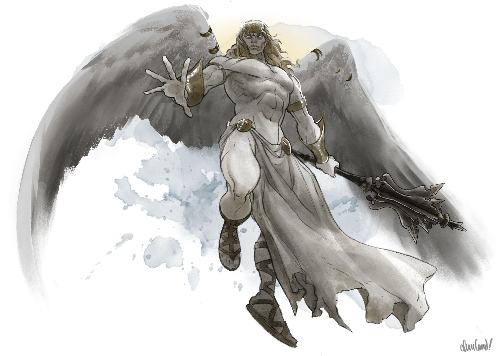
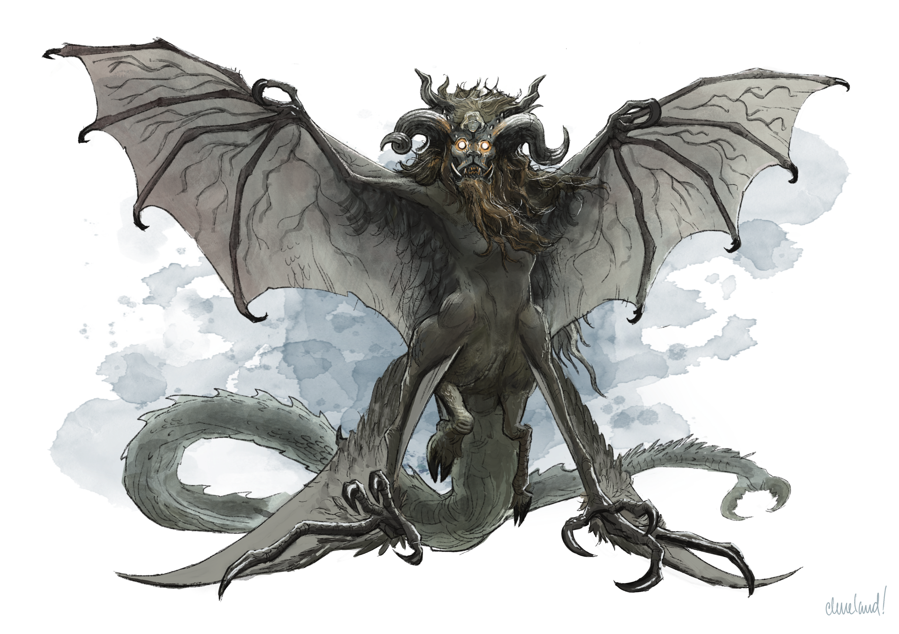
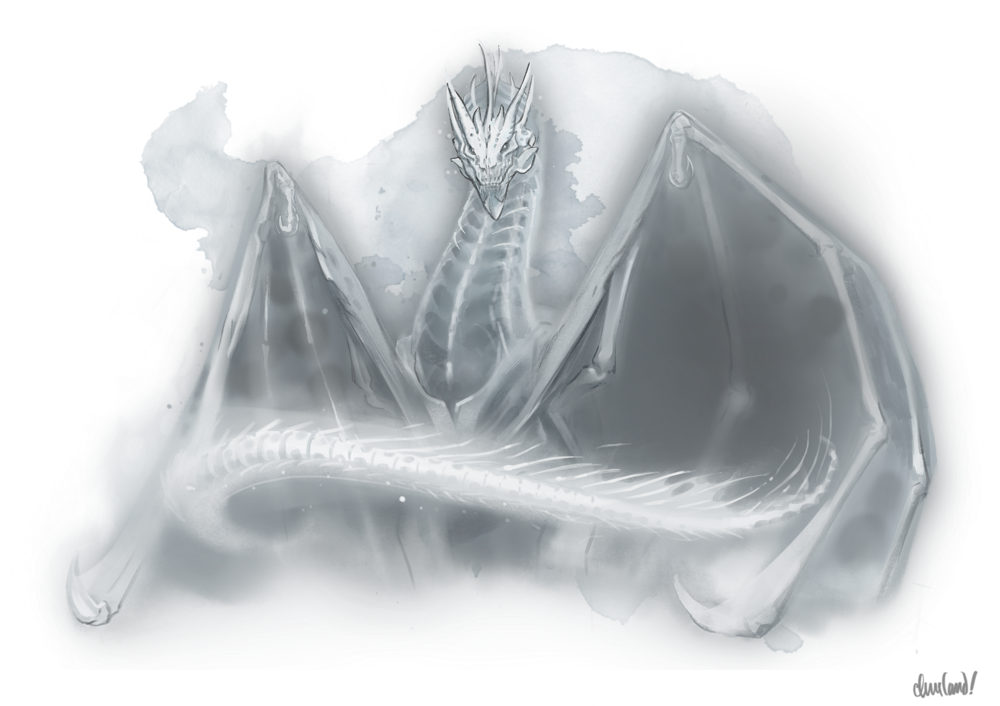

_Uma aventura para cinco personagens de 7º nível._
Neste arco, ao retornarem do Castelo Ravenloft em Arco P - Assalto a Ravenloft, os jogadores descobrem que o Abade da Abadia de São Markovia pretende tomar o coração da Baronesa Anna Krezkova antes do anoitecer. Enquanto isso, o lobisomem mutante Kiril Stoyanovich caça os jogadores, ao mesmo tempo em que o Comandante Vladimir Horngaard reúne seus cavaleiros revenantes para executar uma sentença de morte contra eles. Poderão os jogadores redimir o Abade, derrubar Kiril e acender o farol de Argynvostholt — ou seus esforços para devolver a luz ao vale barovense terminarão de forma horrenda e sangrenta?
Q1. Fuga de Ravenloft
Dependendo dos meios de escapatória, os jogadores que fogem do Castelo Ravenloft ao final de Arco P - Assalto a Ravenloft podem tentar descansar por uma noite em diversos lugares diferentes.
Q1a. O Braseiro de Teleporte
Os jogadores que escapam do Castelo Ravenloft pelo braseiro de teleporte em K78. Sala do Braseiro (p. 82) podem se teletransportar para os lugares descritos em Arco P - Assalto a Ravenloft. De lá, podem buscar abrigo da seguinte forma:
Vila de Barovia. Se os jogadores se teletransportarem para o cemitério da vila de Barovia, Ismark Kolyanovich fica feliz em deixá-los descansar nos quartos de hóspedes da mansão do burgomestre. Embora surpreso ao saber que Ireena se juntou aos jogadores em sua missão de derrotar Strahd, ele se conforta com o fato de que Ireena ganhou força, confiança e determinação ao lado deles.
Cidade de Vallaki. Se os jogadores se teletransportarem para a loja do fabricante de caixões na cidade de Vallaki, podem se abrigar na Estalagem Águas Azuis, na Igreja de Santo Andral ou (caso estejam em bons termos com Lady Fiona Wachter e não revelem seu ataque ao Castelo Ravenloft) na Wachterhaus.
Vila de Krezk. Se os jogadores se teletransportarem para o Santuário do Sol Branco na vila de Krezk, podem se abrigar no chalé dos Krezkov, tal como descrito em Arco K - A Abadia Decaída. Os Krezkov se animam se os jogadores contarem que obtiveram o Ícone da Graça do Alvorecer na cripta de São Markovia, no Castelo Ravenloft, e que pretendem usá-lo para purgar a loucura do Abade. Se os jogadores estiverem acompanhados de Emil Toranescu, o Barão Dmitri Krezkov o reconhece com raiva como "o lobo que roubou sua irmã", Zuleika, e insiste que Emil durma do lado de fora, a menos que seja convencido do contrário.
Dmitri não acredita de verdade que Emil tenha sequestrado Zuleika ou a forçado a se juntar ao bando de lobisomens contra a vontade dela. Ainda assim, Dmitri guarda rancor de Emil por ter "atraído" Zuleika para longe de Krezk com histórias fantasiosas sobre o "dom" da licantropia, que Dmitri considera uma maldição. Se questionado, Dmitri range os dentes e cospe: "Ele convenceu minha irmã de que ser um monstro era um dom — uma besta. Encheu a cabeça dela de mentiras e delírios, e a tirou de mim... de todos nós."
Torre de Van Richten. Se os jogadores se teletransportarem para a Torre de Van Richten, podem se abrigar na própria torre ou viajar até a vila de Krezk. A jornada da torre até Krezk tem cinco quilômetros e meio e leva uma hora e dez minutos.
Ruínas de Berez. Se os jogadores se teletransportarem para o Monumento de Marina, em Berez, podem se abrigar em U2. Mansão Ulrich (p. 162) ou U4. Adro da Igreja (p. 164), com a chegada escondida pela névoa espessa que se agarra ao pântano.
Caso os jogadores tentem explorar as demais construções de Berez, essas ruínas são em grande parte como descritas em U1. Chalés Abandonados (p. 162), U4. Adro da Igreja (p. 164) e U5. Monumento de Marina (p. 164). Entretanto, os chalés abandonados abrigam quatro bruxas conforme detalhado adiante, o fantasma de Lazlo Ulrich não aparece na mansão Ulrich e o curral de cabras de Baba Lysaga é como descrito em I4c. A Magia de Vidência.
Se os jogadores tentarem se abrigar em U1. Chalés Abandonados (p. 162), são atacados por duas bruxas maldicentes barovenses (Barovian hexwitches) e duas bruxas-do-brejo barovenses (Barovian bogwitches), que são como descritas em Arco P - Assalto a Ravenloft. O tumulto atrai a atenção dos sete espantalhos que montam guarda no charco, os quais chegam três rodadas depois de o combate começar.
Nível de Combate: Leve (primeira onda), Severo (segunda onda) Nível Esperado dos Personagens: 7 Aliados: Ireena Kolyana (ND 2), Ezmerelda d'Avenir (ND 4) Consumo Esperado de PV: 4% (primeira onda), 29% (primeira onda), para um total de 33%
Inimigos:
| 3 Jogadores | 4 Jogadores | 5 Jogadores | 6 Jogadores | |
|---|---|---|---|---|
| Bruxa-do-Brejo Barovense | 1 | 2 | 2 | 2 |
| Bruxa Maldicente Barovense | 2 | 1 | 2 | 2 |
| Bruxa-Tempestade Barovense | 0 | 0 | 0 | 1 |
| Espantalho | 5 | 6 | 7 | 8 |
Balanceamento:
Se você tiver mais de 5 jogadores, modifique o encontro das seguintes maneiras:
| Número de Jogadores | Modificação |
|---|---|
| 6 | Adicione uma bruxa-tempestade à primeira onda. |
Os jogadores também podem viajar de Berez até a cidade de Vallaki, a Torre de Van Richten ou a vila de Krezk:
- A jornada de Berez até Vallaki tem sete quilômetros e leva uma hora e trinta minutos.
- A jornada de Berez até o Lago Baratok tem onze quilômetros e leva duas horas e vinte minutos.
- A jornada de Berez até Krezk tem catorze quilômetros e leva três horas.
Velha Estrada Svalich. Se os jogadores se teletransportarem para o Monumento de Marina, em Berez, podem acampar sobre a Velha Estrada Svalich ou perto dela. Se o fizerem, vivenciam o encontro aleatório Zumbis de Strahd (p. 31) uma hora depois de montarem acampamento, mas com oito zumbis em vez de zumbis de Strahd.
Vinícola Feiticeiro dos Vinhos. Se os jogadores se teletransportarem para a Vinícola Feiticeiro dos Vinhos, os Martikov ficam contentes em lhes oferecer um lugar para dormir naquela noite. Quando os jogadores partem na manhã seguinte, Davian envia dois enxames de corvos para acompanhá-los até seu destino. (Os corvos partem assim que os jogadores chegarem a Vallaki, Krezk ou Argynvostholt, o que vier primeiro.)
Passo Tsolenka. Se os jogadores se teletransportarem para o Passo Tsolenka, podem dormir na torre de guarda de lá. Os vrocks petrificados não atacam jogadores que contornem a guarita pelo lado leste da grade levadiça.
Os jogadores também podem viajar da torre de guarda até a cidade de Vallaki, a Torre de Van Richten ou a vila de Krezk:
- A jornada da torre até Krezk tem dezessete quilômetros e meio e leva três horas e quarenta minutos.
- A jornada da torre até o Lago Baratok tem dezessete quilômetros e leva três horas e trinta minutos.
- A jornada da torre até Vallaki tem vinte e um quilômetros e leva quatro horas e trinta minutos.
Q1b. A Pedra-Pilar
Os jogadores que escapam do Castelo Ravenloft descendo o penhasco sudeste da Pedra-Pilar de Ravenloft aterrissam logo ao norte da vila de Barovia, a pouca distância da borda norte de E6. Cemitério (p. 48). Eles podem encontrar abrigo na vila conforme descrito em Q1a. O Braseiro de Teleporte.
Q1c. A Ponte Levadiça
Os jogadores que escapam do Castelo Ravenloft atravessando o abismo ocidental podem encontrar abrigo da seguinte forma:
Velha Estrada Svalich. Os jogadores podem acampar sobre a Velha Estrada Svalich ou perto dela, conforme descrito em Q1a. O Braseiro de Teleporte.
Cidade de Vallaki. A jornada do Castelo Ravenloft até Vallaki tem dezoito quilômetros e leva três horas e quarenta e cinco minutos. Os jogadores podem encontrar abrigo em Vallaki conforme descrito em Q1a. O Braseiro de Teleporte.
Vila de Barovia. A jornada do Castelo Ravenloft até Barovia tem vinte e um quilômetros e leva quatro horas e trinta minutos. Os jogadores podem encontrar abrigo em Barovia conforme descrito em Q1a. O Braseiro de Teleporte.
Acampamento do Lago Tser. A jornada do Castelo Ravenloft até o Lago Tser tem dezenove quilômetros e leva quatro horas. Arturi Radanavich não está mais presente, tendo partido três dias antes sem qualquer aviso.
Se for visitada, Madam Eva se recusa a ler a sorte dos jogadores uma segunda vez e apenas os adverte de que entraram no "limiar final do caminho que escolheram". Se os jogadores lhe informarem que descobriram seu verdadeiro nome (Katarina), Madam Eva os parabeniza com ironia pela perspicácia e pode compartilhar as informações sobre sua relação com Varushka em Arco O - Jantar com o Diabo.
Se os jogadores sugerirem que ela está ligada às Damas dos Fanes, o olhar de Madam Eva se endurece e ela adverte friamente os jogadores para "não invocarem os nomes dos antigos, para não despertarem atenções indesejadas". (Madam Eva não explica mais nada.)
Q2. A Súplica de Dmitri
Q2a. Um Presságio Sombrio
Ao amanhecer do primeiro dia depois de os jogadores invadirem o Castelo Ravenloft, uma pena branca como a neve desce da Abadia de São Markovia e pousa no parapeito da janela da cozinha do chalé dos Krezkov. Anna e Dmitri reconhecem a pena como a mensagem prometida do Abade, sinalizando que ele pretende recolher o coração de Anna ao anoitecer.
Se os jogadores ainda não estiverem em Krezk, Dmitri parte rumo a Vallaki acompanhado de dois guardas krezkianos, na esperança de encontrá-los lá.
- Se os jogadores estiverem viajando para Krezk vindos de Berez, do Passo Tsolenka, da Torre de Van Richten ou de um trecho da Velha Estrada Svalich a oeste de Vallaki, eles encontram Dmitri e seus companheiros na R. Encruzilhada do Rio Corvo (p. 40).
- Do contrário, Dmitri e seus companheiros chegam a Vallaki duas horas depois do amanhecer, deixam um recado com os guardas do portão oeste e seguem para a Estalagem Águas Azuis, esperando encontrar os jogadores lá.
Se os jogadores dormiram no chalé dos Krezkov na noite anterior, são acordados pelo som de soluços abafados vindos da cozinha, onde Anna tenta tranquilizar Dmitri dizendo que "vai ficar tudo bem", enquanto um Dmitri em lágrimas jura desesperadamente que "não deixará que nada aconteça" com ela.
Onde quer que encontre os jogadores, um Dmitri angustiado lhes informa que o Abade pretende recolher o coração de Anna ao anoitecer e que provavelmente arrasará Krezk a menos que Anna faça a viagem até a Abadia de São Markovia antes desse momento. Se os jogadores não se oferecerem para isso, Dmitri implora que intercedam por Anna — "se não por nós, então por nossos filhos".
Q2b. A Velha Estrada Svalich
Jornada até Vallaki
A Guarda dos Corvos
Se os jogadores dormiram a leste de Vallaki depois de escapar do Castelo Ravenloft, como na vila de Barovia ou no acampamento do Lago Tser, eles acordam e encontram quatro enxames de corvos de vigília sobre telhados ou árvores próximas. Os corvos, que ouviram falar dos feitos heroicos dos jogadores pelos Guardiões da Pena, acompanham o grupo como guarda de honra até que cheguem à cidade de Vallaki.
A Emboscada dos Lobos
Uma hora antes de os jogadores chegarem a Vallaki, eles encontram três cadáveres espalhados pela estrada, conforme descrito em Cadáver (p. 30). Dois dos cadáveres pertencem a adultos barovenses mortos por lobos atrozes, enquanto o terceiro se parece com o jogador que mais desagradou Strahd.
Se o terceiro cadáver se desfizer, ou quando os jogadores fizerem menção de deixar os corpos para trás, eles são atacados por seis lobos atrozes, conforme descrito em Lobos Atrozes (p. 30), acompanhados de dois espantalhos, conforme descrito em Espantalhos (p. 31). Os lobos e os espantalhos lutam até a morte, assim como os enxames de corvos, que combatem ferozmente para defender os jogadores.
Este é um encontro de combate severo contra um grupo de cinco jogadores de 7º nível, uma aliada de ND 2 (Ireena Kolyana) e uma aliada de ND 4 (Ezmerelda d’Avenir), e consumirá aproximadamente 37% do total máximo de pontos de vida deles. Para grupos menores ou maiores, modifique o encontro da seguinte forma:
- Três Jogadores. Reduza o número de lobos atrozes para 5 e o número de espantalhos para um.
- Quatro Jogadores. Reduza o número de espantalhos para um.
- Seis Jogadores. Aumente o número de espantalhos para três.
Nível de Combate: Severo Nível Esperado dos Personagens: 7 Aliados: Ireena Kolyana (ND 2), Ezmerelda d'Avenir (ND 4) Consumo Esperado de PV: 37%
Inimigos:
| 3 Jogadores | 4 Jogadores | 5 Jogadores | 6 Jogadores | |
|---|---|---|---|---|
| Lobo Atroz | 5 | 6 | 6 | 6 |
| Espantalho | 1 | 1 | 2 | 3 |
| Enxame de Corvos | 4 | 4 4 | 4 |
Chegada em Vallaki
Assim que os jogadores chegam a Vallaki, os guardas do portão os informam que o Barão Dmitri Krezkov, de Krezk, os aguarda na Estalagem Águas Azuis. Se forem até lá, os jogadores encontram o Barão Krezkov no salão, sentado ansiosamente ao balcão diante de uma bebida intocada, enquanto Danika tenta consolá-lo. A cena então se desenrola conforme descrito em Q2a. Um Presságio Sombrio.
Jornada até Krezk
Enquanto viajam para Krezk, os jogadores encontram novamente o revenante que monta guarda na ponte sobre o Rio Corvo, conforme descrito em Arco I - As Muralhas de Krezk. O revenante saúda os jogadores calorosamente, mas os adverte, enquanto uma sombra lhe atravessa o rosto, de que "notícias sombrias" pairam no vento e de que ele talvez seja chamado de volta de seu posto antes do esperado.
O revenante não sabe ao certo quais são essas notícias sombrias, mas pode contar que o Comandante Vladimir Horngaard está enfurecido com o ataque dos jogadores ao Castelo Ravenloft. O revenante não sabe como Vladimir pode ter tomado conhecimento das ações dos jogadores, mas sugere que ele tenha descoberto pelos guerreiros fantasmas que lhe servem de olhos e ouvidos no Plano Etéreo.
Quando os jogadores partem, o revenante lhes deseja boa sorte, despedindo-se solenemente e acrescentando, quase com melancolia: "Que o Senhor da Manhã os abrigue na luz de Sua graça."
Q3. Retorno a Krezk
Ao chegarem a Krezk, os jogadores são recebidos no portão por Anna Krezkova, que aguardava ansiosamente o retorno de Dmitri. Quando ele chega, ela o abraça em gratidão por tê-lo de volta em segurança e agradece sinceramente aos jogadores por terem feito a viagem.
Anna e Dmitri, dois nobres com valores de Força 14 (+2) e empunhando, respectivamente, um machado de batalha prateado e uma espada longa (+4 para acertar, 1d10 + 2 de dano cortante cada), ficam contentes em acompanhar os jogadores até a Abadia, se solicitados. No entanto, advertem os jogadores, envergonhados, de que provavelmente serão de pouca ajuda numa luta.
Se Emil estiver presente, os jogadores podem convencê-lo a ajudá-los a confrontar o Abade citando suas obrigações como cunhado dos Krezkov e obtendo sucesso num teste de Carisma (Persuasão) CD 10. (Emil, que não gosta de Dmitri por sua "covardia" e "resignação" diante da maldição da família, e pelos esforços de Dmitri em fazer Zuleika evitá-lo e se envergonhar de sua licantropia, não sente inicialmente nenhuma obrigação de ajudar os Krezkov.)
Os jogadores fazem o teste com vantagem se argumentarem que Zuleika gostaria que ele ajudasse o irmão dela. Os jogadores têm sucesso automático se informarem a Emil que o Abade usou a aparência de sua esposa, Zuleika, para manipular Ilya a matar Kala (sobrinha de Emil).
Q3a. Retorno à Abadia
Enquanto os jogadores sobem pela S5. Estrada Sinuosa (p. 147), o fragmento de divindade no Ícone da Graça do Alvorecer fala com eles, perguntando:
- o que aconteceu com a Abadia de São Markovia após a morte de Markovia no Castelo Ravenloft
- como o Abade veio a residir em Krezk, na Abadia
- o que aconteceu com o Abade depois que ele chegou à Abadia, e como ele mergulhou na loucura
Independentemente das respostas dos jogadores, o fragmento os adverte de que o Abade, como todas as criaturas de criação celestial, provavelmente é fanático, inflexível e absolutamente devotado àquilo que julga ser sua causa. "Pisem com cuidado e preparem seu aço", sussurra o fragmento telepaticamente. "Pois os raios do Senhor da Manhã só brilham mais forte quando percebem a escuridão diante de si."
O Portão Norte
Os jogadores são recebidos no S6. Portão Norte (p. 147) por Otto e Zygfrek Belview. Se os jogadores concordaram em investigar a "perfeição" de Cyrus em Arco K - A Abadia Decaída, Otto (empolgado) e Zygfrek (aflita) perguntam aos jogadores se viram Cyrus desde que deixaram a Abadia e como a "perfeição" do Abade o transformou. "Ele está forte?", zurra Otto, feliz. "Ele está belo?", sussurra Zygfrek, a voz trêmula.
Se os jogadores contarem a verdade sobre a situação de Cyrus, Otto e Zygfrek ficam horrorizados: Zygfrek se cala e aperta a capa em volta do corpo, enquanto Otto exige furiosamente que os jogadores retirem sua "mentira". "O Abade jamais mentiria para nós!", uiva Otto, com lágrimas se formando no canto dos olhos.
Os jogadores podem convencer Otto e Zygfrek de que estão dizendo a verdade com um teste de Carisma (Persuasão) CD 10 bem-sucedido, tendo sucesso automático se descreverem a aparência, a personalidade ou outros detalhes de Cyrus que só poderiam ter obtido ao encontrá-lo. Se o fizerem, Otto e Zygfrek murcham por completo, com o coração partido. "Esperamos por tanto tempo", murmura Otto, fungando. "Pelo que esperamos agora?" Enquanto ele fala, Zygfrek puxa o capuz para cobrir o rosto, deixa o portão e se senta à beira do penhasco, contemplando a vila lá embaixo com tristeza, vergonha e ódio de si mesma. Otto e Zygfrek ficam gratos por qualquer orientação ou palavra de ânimo que os jogadores possam oferecer.
Otto e Zygfrek levam os jogadores até o Abade de bom grado, se assim lhes pedirem, embora Zygfrek prefira ficar junto ao penhasco caso lhe contem sobre a duplicidade do Abade.
O Pátio
Ao entrarem no S12. Pátio (p. 150), os jogadores encontram Clovin Belview, que está entregando tigelas de mingau frio aos Belview presos nos galpões de pedra cadeados. Clovin cumprimenta os jogadores e os informa de que o Abade está no asilo, localizado em S15. Casa dos Loucos (p. 151), cuidando e ministrando aos familiares de Clovin que estão ali.
Se os jogadores concordaram em investigar a "perfeição" de Cyrus em Arco K - A Abadia Decaída, Clovin pergunta com avidez se eles viram Cyrus desde que partiram da Abadia. "Ele está bem?", pergunta, acrescentando: "Ele já se acostumou à nova forma?"
Se os jogadores contarem a verdade sobre a situação de Cyrus, o rosto de Clovin se abate por um instante e então fica frio e cuidadosamente controlado. "Entendo", observa ele, enquanto a cabeça de bebê em seu ombro começa a berrar.
Apesar de sua própria decepção, Clovin está determinado a cumprir sua promessa caso os jogadores tragam notícias de Cyrus. Se o fizerem, antes de levá-los ao Abade, ele os conduz até um suporte de madeira coberto por um pano preto no canto sudeste do S17. Sótão e Campanário (p. 152). Do suporte pendem dois pares de asas voadoras (wings of flying) com armações feitas de ossos de animais. (O Abade fabricou as asas como parte de seus experimentos originais com os Belview, mas as abandonou há muito tempo.) Elas têm as seguintes alterações:
- As asas são asas artificiais, e não mantos, e se animam quando ativadas em vez de se transformarem.
- Um par de asas fica animado por 1 minuto, e não por 1 hora
- Depois que um par de asas é usado, não pode ser usado novamente até o amanhecer seguinte.
- Um dos pares se parece com asas de ave e ostenta centenas de grandes penas macias arrancadas da forma de águia gigante do Abade, enquanto o outro se parece com asas de morcego e ostenta longas membranas de couro animal curtido.
- Uma criatura pode se sintonizar com as asas em 1 minuto.
Q3b. Confrontando o Abade
Os jogadores encontram o Abade no asilo da Abadia, que é em grande parte como descrito em S15. Casa dos Loucos (p. 151), exceto que as celas que abrigam os Belview têm grades de ferro que lhes permitem assistir à cena. Além disso, os jogadores escutam a seguinte conversa enquanto se aproximam e entram nessa área:
Um jovem belo em vestes de monge está parado no meio do corredor, um livro de orações debaixo de um dos braços — o Abade. Diante dele está uma mulher delicada em um vestido esfarrapado, a cabeça baixa em silenciosa submissão — Vasilka. O golem de carne está atrás deles, sua forma grotesca erguendo-se sobre os dois em meio às sombras.
"Já lhe disse para não se macular com os impuros", repreende o Abade, a voz áspera. "Ainda mais hoje, logo hoje. Esqueceu-se da operação a que será submetida esta noite? Uma ínfima praga vinda dessas criaturas poderia trazer a danação à terra que você deve servir."
"Me perdoe", sussurra Vasilka, trêmula. "Eu não pensei..."
"Não", diz o Abade friamente. "De fato, não pensou."
A menos que os jogadores interrompam, a conversa prossegue assim:
- O Abade suspira, esfrega as têmporas e pousa uma mão paternal no ombro de Vasilka. "Não tema", diz ele com suavidade. "O perdão e a graça do Senhor da Manhã são eternos, desde que nos lembremos de nossos devidos lugares."
- O Abade aponta para o golem de carne e para os Belview nas celas, acrescentando: "O lugar deles é aqui. E o seu é...?"
- A cabeça de Vasilka se abaixa ainda mais quando ela responde: "No salão, à espera de ser desposada."
- O Abade sorri, assente e aperta o ombro dela. "Ótimo. Enquanto se lembrar disso, você não poderá ser desviada."
O Abade então se volta para os jogadores e os cumprimenta com cordialidade, dando-lhes as boas-vindas de volta à Abadia de São Markovia e indagando o motivo de sua presença. Se os jogadores insistirem para que ele poupe Anna e abandone sua missão de recolher o coração dela, ele ri baixinho e os repreende com gentileza, observando que "os caminhos dos deuses podem parecer insensíveis, ou mesmo cruéis, aos não iluminados, mas a fé sempre nos guiará à salvação."
Se os jogadores confrontarem o Abade por suas mentiras aos Belview sobre Cyrus e a promessa de "perfeição", os Belview nas celas se calam. O rosto do Abade endurece e ele pergunta friamente aos jogadores como chegaram a tais "histórias fantasiosas".
Qualquer que seja a resposta dos jogadores, o Abade então se volta para os Belview nas celas e diz: "Não permitam que esses forasteiros os desviem do caminho. No Senhor da Manhã, todas as coisas são possíveis." Os Belview nas celas então começam a uivar e a ranger os dentes, batendo nas grades de metal enquanto exigem que os "forasteiros imundos e mentirosos" sejam "abatidos, esquartejados e ensopados".
Os jogadores podem acalmar os Belview e convencê-los da verdade obtendo sucesso num teste de Carisma (Persuasão) CD 20. A CD cai para 10 se os jogadores primeiro desafiarem o Abade a dizer aos Belview se ele é capaz de "aperfeiçoá-los". (O Abade, que não pode mentir, se recusa a fazê-lo, insistindo apenas que "seu rebanho" conhece e confia nas palavras de seu "pastor".) Se Otto, Zygfrek ou Clovin estiverem presentes, os jogadores têm sucesso automático, pois seus companheiros confrontam o Abade por suas "mentiras", proclamando à família que Cyrus não foi "aperfeiçoado" e que o Abade não tem meio algum de completar a transformação deles.
Se os jogadores apresentarem o Ícone da Graça do Alvorecer e lhe disserem que seu espírito foi corrompido e precisa ser restaurado por meio do Ícone, a expressão do Abade fica gélida e ele os adverte suavemente de que "falam as palavras de falsos profetas". "Este artefato jazeu no castelo do vampiro por séculos", entoa ele. "Ponham-no de lado e extirpem os venenos que ele instilou em suas mentes."
Se os jogadores insistirem em purificar o espírito do Abade ou continuarem a desafiá-lo de outro modo, os olhos do Abade se estreitam e ele exige em voz baixa que os jogadores deixem a Abadia imediatamente, "antes que abusem da hospitalidade". Enquanto isso, leia:
Uma tensão palpável enche o ar enquanto as sombras da sala se adensam. O chão e as paredes parecem vibrar de poder, e os olhos do Abade cintilam por um instante com uma loucura dourada.
Vasilka Intercede. Se os jogadores se recusarem a partir e tiverem entregue anteriormente o colar de flores de Vasilka ao golem de carne em Arco K - A Abadia Decaída, ela se coloca entre o Abade e os jogadores e implora que ele não os machuque. "Eles são bravos, gentis e sábios", diz ela, com a voz trêmula. "Certamente não seria loucura ouvi-los?"
A menos que os jogadores interrompam, ocorre então o seguinte diálogo:
- O Abade instrui Vasilka: "Saia da frente, criatura tola. Não deixe que as palavras deles turvem sua mente e obscureçam seus deveres."
- Vasilka balança a cabeça em silêncio. A expressão do Abade se ensombrece e ele pergunta a Vasilka se ela o está desafiando. Ela hesita, depois assente lentamente, com lágrimas escorrendo pelos cantos dos olhos.
- Uma sombra atravessa o rosto do Abade, e seus olhos se estreitam. "Então você é defeituosa — e precisa ser descartada." Leia:
A mão do Abade avança num golpe, agarrando Vasilka pela garganta e erguendo-a no ar. Um manto de sombras radiantes gira em sua palma e então se condensa numa maça de platina que reluz com crueldade. "Talvez eu tenha sido paciente demais com você", entoa ele, sem vida, "compassivo demais. Sempre posso começar de novo, com peças melhores e melhor treinamento."
A menos que os jogadores o impeçam, o Abade então agarra Vasilka (que não resiste) e a arrasta para o pátio, onde passa a atacá-la com sua maça. (Veja adiante mais informações sobre o ataque do Abade.)
A Desobediência dos Jogadores. Se os jogadores se recusarem a partir e não tiverem entregue anteriormente o colar de flores de Vasilka ao golem de carne em Arco K - A Abadia Decaída, uma sombra atravessa o rosto do Abade e seus olhos se estreitam. Leia:
O Abade dá um passo à frente, e sua única passada ecoa como um estrondo de trovão pelo corredor sombrio. Um manto de sombras radiantes gira em sua palma e então se condensa numa maça de platina que reluz com crueldade.
"Se não obedecerão", entoa ele, "então serão obrigados a obedecer."
O Abade então ataca.
Q3c. A Fúria do Abade
Quando o Abade ataca, ele se despe das vestes de monge e se transforma, revelando sua verdadeira forma angelical. Leia:
Uma cascata brilhante de luz divina irradia da forma do Abade, e asas colossais se desdobram de seus ombros, cada pena imensa branca como a neve e perfeitamente formada. Suas vestes mortais caem, revelando uma carne branca e luminosa que parece cinzelada no próprio mármore. Manoplas douradas inscritas com runas celestiais envolvem seus antebraços, e um sarongue dourado se enrola suavemente em sua cintura, o tecido chicoteando ao vento que se ergue e se revolve.
Os cabelos do Abade crescem até alcançar os ombros, cintilando como ouro fiado. Enquanto seus ombros e seu torso se alargam, ele parece se aprumar, elevando-se até atingir quase dois metros e dez de altura. O ar parece crepitar de poder, e as próprias paredes parecem se curvar em sua direção enquanto seus olhos ardem de ira celestial.
Se o Abade iniciou o combate atacando Vasilka, ele continua a fazê-lo até reduzi-la a 0 pontos de vida ou até que um jogador lhe cause 20 pontos de dano em um único turno, momento em que ele volta sua atenção para os jogadores. (Vasilka não revida sob nenhuma circunstância.)
Em combate, o Abade prefere lutar no pátio da Abadia, mas pode ser atraído para uma das alas adjacentes se um jogador obtiver sucesso num teste de Carisma (Atuação) CD 20.
Nível de Combate: Sangrento (primeira fase), Sangrento (segunda fase) Nível Esperado dos Personagens: 7 Aliados: Ireena Kolyana (ND 2), Ezmerelda d'Avenir (ND 4) Consumo Esperado de PV: 42% (primeira fase), 51% (segunda fase), para um total de 93%
Balanceamento:
Se você tiver menos ou mais de 5 jogadores, modifique o encontro das seguintes maneiras:
| Número de Jogadores | Modificação |
|---|---|
| 3 | Reduza os pontos de vida do Abade em cada fase para 181. Remova sua ação Ataque Múltiplo em cada fase e reduza o dano de suas ações bônus da Fase 1 para 10 (3d6). Reduza o dano de sua ação bônus Irromper Terra na Fase 2 para 5 (2d4) e o de sua ação bônus Raio do Eclipse para 7 (2d6) de dano de cada tipo. |
| 4 | Reduza os pontos de vida do Abade em cada fase para 218. Na primeira fase, limite sua reação Punir a apenas 2 por rodada. Na segunda fase, limite sua reação Cauda a apenas 2 por rodada. Além disso, diminua o dano de sua ação bônus Raio do Eclipse para 2d6 de dano de cada tipo. |
| 6 | Aumente os pontos de vida do Abade para 292 em cada fase. Aumente o Ataque Múltiplo da primeira fase para três ataques, mas reduza cada uma de suas ações bônus para 10 (3d6) de dano. Na segunda fase, aumente seu Ataque Múltiplo para incluir dois ataques de Garra, mas reduza Irromper Terra para 5 (2d4) de dano. |
Se os jogadores deram a grinalda de flores de Vasilka ao golem de carne em Arco K - A Abadia Decaída, ele se junta a eles na batalha contra o Abade quando este entrar em sua segunda fase.

"Ithuriel", por Caleb Cleveland. Apoie-o no Patreon!Ithuriel, o Portador do Alvorecer
Celestial Médio, Leal e MauClasse de Armadura 17 (armadura natural)
Pontos de Vida 255 (30d8 + 120)
Deslocamento 9 m, voo 27 m
| FOR | DES | CON | INT | SAB | CAR |
|---|---|---|---|---|---|
| 18 (+4) | 18 (+4) | 18 (+4) | 17 (+3) | 20 (+5) | 20 (+5) |
Testes de Resistência Sab +10, Car +10
Perícias Intuição +10, Percepção +10
Resistências a Dano necrótico, radiante
Imunidades a Condições enfeitiçado, exaustão, amedrontado
Sentidos visão verdadeira 36 m, Percepção passiva 20
Idiomas todos, telepatia 36 m
Nível de Desafio 15
Bônus de Proficiência +5
Combatente de Curta Distância. Ithuriel não tem desvantagem em suas jogadas de ataque à distância quando está a até 1,5 metro de uma criatura hostil.
Conjuração Inata. A habilidade de conjuração de Ithuriel é Carisma (CD 18 para resistir às magias). Ele pode conjurar inatamente as seguintes magias, exigindo apenas componentes verbais:
À vontade: detectar o bem e o mal (detect evil and good)
1/dia cada: comunhão (commune), reviver os mortos (raise dead)
Resistência a Magia. Ithuriel tem vantagem em testes de resistência contra magias e outros efeitos mágicos.
Armas Mágicas. Os ataques com arma de Ithuriel são mágicos.
Graça Decaída. Quando Ithuriel é reduzido a 0 pontos de vida, sua forma se expande e se retorce, tornando-se uma criatura descomunal com cabeça de leão, corpo de carneiro, asas de morcego e cauda de crocodilo. Suas estatísticas são então instantaneamente substituídas pelas de sua segunda forma. Sua contagem de iniciativa não muda, o dano excedente não é transferido para a nova forma e ele não mantém nenhuma das condições que sofria na forma anterior. Em seguida, ele usa imediatamente sua reação presença aterradora.
Ações
Ataque Múltiplo. Ithuriel faz dois ataques. Ele pode substituir um desses ataques por raio de luz.
Maça. Ataque com Arma Corpo a Corpo: +9 para acertar, alcance 1,5 m, um alvo. Acerto: 7 (1d6 + 4) de dano de concussão mais 4 (1d8) de dano radiante.
Raio de Luz. Ataque Mágico à Distância: +10 para acertar, alcance 9 m, um alvo. Acerto: O alvo sofre 9 (2d8) de dano radiante e fica delineado por luz radiante até o fim do próximo turno de Ithuriel. Qualquer jogada de ataque contra uma criatura ou objeto afetado tem vantagem se o atacante puder vê-lo, e a criatura ou objeto afetado não pode se beneficiar de estar invisível.
Toque Curativo (5/Dia). Ithuriel toca outra criatura. O alvo recupera magicamente 23 (4d8 + 5) pontos de vida e é libertado de qualquer maldição, doença, veneno, cegueira ou surdez.
Mudar de Forma. Ithuriel se metamorfoseia magicamente em um humanoide ou fera que tenha um nível de desafio igual ou inferior ao seu, ou retorna à sua forma verdadeira. Ele reverte à forma verdadeira se for reduzido a 0 pontos de vida. Todo equipamento que esteja vestindo ou carregando é absorvido ou portado pela nova forma (escolha de Ithuriel). Em uma nova forma, Ithuriel mantém suas estatísticas de jogo e sua capacidade de falar, mas sua CA, seus modos de deslocamento, sua Força, sua Destreza e seus sentidos especiais são substituídos pelos da nova forma, e ele ganha quaisquer estatísticas e capacidades (exceto características de classe, ações lendárias e ações de covil) que a nova forma tenha e ele não possua.
Ações Bônus
Vento Divino. Ithuriel desencadeia uma poderosa rajada de suas asas angelicais em um cone de 3 metros. Cada criatura naquela área deve fazer um teste de resistência de Constituição CD 17 ou sofre 14 (4d6) de dano cortante e é empurrada 3 metros para longe.
Radiância Sagrada (1/dia). A forma de Ithuriel irrompe em luz divina. Cada criatura que possa vê-lo a até 6 metros deve ser bem-sucedida em um teste de resistência de Constituição CD 18 ou sofre 14 (4d6) de dano radiante. Uma criatura que falhe no teste de resistência por 5 ou mais também fica cega até o início do próximo turno de Ithuriel. Uma criatura que falhe no teste por 10 ou mais também fica enfeitiçada por Ithuriel até o início do próximo turno dele. Enquanto estiver enfeitiçada dessa forma, a criatura deve cair no chão para se rastejar diante de Ithuriel no início de seu turno e então encerrar o turno imediatamente.
Reações
Ithuriel pode usar até três reações por rodada, mas apenas uma por turno. Se um efeito ou condição o impediria de usar reações, ele perde uma reação em vez disso.
Indomável. Gatilho: Uma criatura hostil encerra seu turno. Efeito: Ithuriel pode repetir o teste de resistência contra um efeito ou condição que o esteja afetando. (Esta reação não tem efeito se o efeito ou condição não exigia originalmente que ele falhasse em um teste de resistência.)
Punir. Em resposta a um inimigo errar um ataque corpo a corpo contra ele, Ithuriel faz o seguinte ataque contra esse inimigo: Palma. Ataque com Arma Corpo a Corpo: +9 para acertar, alcance 1,5 m, um alvo. Acerto: 7 (1d6 + 4) de dano de concussão, e Ithuriel pode forçar o alvo a fazer um teste de resistência de Força CD 17. Em caso de falha, o alvo é empurrado até 3 metros para longe ou fica agarrado (CD 17 para escapar). Se agarrar o alvo, Ithuriel pode usar imediatamente seu mergulho.
Mergulho. Em resposta a agarrar um inimigo, Ithuriel pode voar imediatamente até seu deslocamento arrastando esse inimigo consigo. Se ele se mover a até 1,5 metro do solo durante o movimento, o inimigo agarrado deve ser bem-sucedido em um teste de resistência de Força CD 17 ou sofre 3 (1d6) de dano de concussão a cada 3 metros descidos. A cada 1,5 metro adicional que Ithuriel percorra rente ao chão, o inimigo agarrado sofre mais 2 (1d4) de dano de concussão enquanto Ithuriel o arrasta contra a terra. (Esse movimento não provoca ataques de oportunidade.) Quando o movimento de Ithuriel termina, o inimigo agarrado é derrubado no chão.
Ascender. Em resposta a sofrer dano, Ithuriel solta quaisquer criaturas que esteja agarrando e então voa até um terço de seu deslocamento sem provocar ataques de oportunidade.
Transmutar (Custa 2 Reações). Em resposta a sofrer uma das seguintes condições, Ithuriel assume momentaneamente a forma da fera correspondente, encerrando a condição: cego (morcego gigante), agarrado (polvo), paralisado (cobra venenosa gigante), caído (aranha gigante), impedido (rato) ou atordoado (água-viva). Ithuriel então retorna imediatamente à sua forma verdadeira.
Lembre-se de que o deslocamento de Ithuriel é reduzido à metade quando ele está agarrando uma criatura, inclusive ao usar sua reação mergulho, a menos que a criatura seja duas ou mais categorias de tamanho menor que Ithuriel.
Ithuriel, a Estrela Caída
Celestial Enorme, Leal e MauClasse de Armadura 19 (armadura natural)
Pontos de Vida 255 (30d8 + 120)
Deslocamento 9 m, voo 18 m
| FOR | DES | CON | INT | SAB | CAR |
|---|---|---|---|---|---|
| 23 (+6) | 14 (+2) | 21 (+5) | 17 (+3) | 20 (+5) | 20 (+5) |
Testes de Resistência Sab +10, Car +10
Perícias Intuição +10, Percepção +10
Resistências a Dano necrótico, radiante
Imunidades a Condições enfeitiçado, exaustão, amedrontado
Sentidos visão verdadeira 36 m, Percepção passiva 20
Idiomas todos, telepatia 36 m
Nível de Desafio 16
Bônus de Proficiência +5
Combatente de Curta Distância. Ithuriel não tem desvantagem em suas jogadas de ataque à distância quando está a até 1,5 metro de uma criatura hostil.
Resistência a Magia. Ithuriel tem vantagem em testes de resistência contra magias e outros efeitos mágicos.
Armas Mágicas. Os ataques com arma de Ithuriel são mágicos.
Ações
Ataque Múltiplo. Ithuriel faz um ataque com suas garras e um com sua mordida ou com seus dardos radiantes
Mordida. Ataque com Arma Corpo a Corpo: +11 para acertar, alcance 3 m, um alvo. Acerto: 17 (2d10 + 6) de dano perfurante mais 4 (1d8) de dano radiante. Se o alvo for uma criatura, ela fica agarrada (CD 19 para escapar). Até que o agarrão termine, o alvo fica impedido e Ithuriel não pode morder outro alvo.
Garra. Ataque com Arma Corpo a Corpo: +11 para acertar, alcance 1,5 m, um alvo. Acerto: 13 (2d6 + 6) de dano cortante.
Dardos Radiantes. Ataque com Arma à Distância: +10 para acertar, alcance 9 m, três alvos distintos. Acerto: 7 (2d4 + 2) de dano radiante.
Ações Bônus
Irromper Terra. Ithuriel golpeia o chão com a cauda, fazendo com que jorros de terra revolvida e pedra irrompam em um raio de 1,5 metro ao seu redor. Cada criatura naquela área deve ser bem-sucedida em um teste de resistência de Força CD 19 ou sofre 7 (2d6) de dano de concussão e cai no chão.
Raio do Eclipse (1/dia). Ithuriel expele uma rajada de radiância ofuscante e escuridão sombria em um cone de 9 metros. Cada criatura naquela área deve fazer um teste de resistência de Constituição CD 18, sofrendo 9 (2d8) de dano radiante mais 9 (2d8) de dano necrótico se falhar, ou metade do dano se for bem-sucedida.
Reações
Ithuriel pode usar até três reações por rodada, mas apenas uma por turno. Se um efeito ou condição o impediria de usar reações, ele perde uma reação em vez disso.
Indomável. Gatilho: Uma criatura hostil encerra seu turno. Efeito: Ithuriel pode repetir o teste de resistência contra um efeito ou condição que o esteja afetando. (Esta reação não tem efeito se o efeito ou condição não exigia originalmente que ele falhasse em um teste de resistência.)
Cauda. Em resposta a ser errado ou acertado por um ataque corpo a corpo, Ithuriel faz o seguinte ataque contra o atacante: Ataque com Arma Corpo a Corpo: +11 para acertar, alcance 4,5 m, um alvo. Acerto: 11 (2d4 + 6) de dano de concussão, e o alvo deve fazer um teste de resistência de Força CD 19. Em caso de falha, Ithuriel pode derrubá-lo no chão ou empurrá-lo até 1,5 metro para longe (escolha de Ithuriel).
Asas (1/rodada). Em resposta a uma criatura que ele possa ver terminar de conjurar uma magia, fazer um ataque ou se mover para um espaço a até 18 metros dele, Ithuriel bate as asas, forçando cada criatura a até 1,5 metro dele a ser bem-sucedida em um teste de resistência de Força CD 19 ou ser empurrada 1,5 metro para longe e derrubada no chão. Ithuriel pode então voar até seu deslocamento em direção à criatura original sem provocar ataques de oportunidade.
Presença Aterradora (1/dia). Em resposta a assumir sua segunda forma, Ithuriel força cada criatura à sua escolha a até 36 metros que esteja ciente dele a fazer um teste de resistência de Sabedoria CD 18. Em caso de falha, a criatura fica amedrontada por Ithuriel até o fim de seu próximo turno.

"Ithuriel", por Caleb Cleveland. Apoie-o no Patreon!
Marco. Derrotar o Abade completa um marco da história. Quando os jogadores libertarem a Abadia e Krezk do controle do Abade, conceda 2.000 XP a cada jogador, ou 2.500 XP se eles também tiverem redimido o Abade (veja adiante).
A Redenção do Abade
Quando os jogadores reduzem a segunda fase do Abade a 0 pontos de vida, leia:
A besta ruge, sua forma terrível se retorcendo e contorcendo. Então, com um último grito estridente, ela desaba no chão, imóvel.
Pouco depois de o Abade ser derrotado, se o Ícone da Graça do Alvorecer estiver presente, a alma dele reage à presença do Ícone da Graça do Alvorecer.
Pequenas partículas de luz dourada começam a cintilar sobre a forma inerte da besta. Lentamente, elas se unem para formar um orbe de chama dourada que paira sobre o peito do Abade.
O Ícone da Graça do Alvorecer começa a brilhar com luz dourada, e o fragmento de divindade em seu interior pede aos jogadores que encostem o Ícone no orbe. "Ele sofreu muito e se perdeu em meio às névoas e sombras", diz o fragmento, pesaroso. "Mas talvez não esteja tão distante a ponto de estar perdido para sempre."
Se os jogadores encostarem o Ícone no orbe, seus espíritos são transportados para um semiplano dentro da alma do Abade. Leia:
Vocês piscam — e, quando seus olhos se abrem de novo, descobrem que a Abadia ao redor desapareceu. Em seu lugar, um vazio escuro e infindável se estende em todas as direções, o chão coberto por um manto de névoa que ondula suavemente, e o silêncio perturbado apenas pelo som de soluços distantes. Ao seu lado, um orbe de chama dourada paira em silêncio.
O orbe contém o fragmento de divindade que habita o Ícone. Ele segue os jogadores conforme se movem e pode se comunicar com eles por telepatia. Ao fazê-lo, informa-lhes que, se conseguirem encontrar o Abade e persuadi-lo a se reunir ao fragmento, ele poderá restaurá-lo à sua antiga glória e purgar a corrupção de sua alma.
Os jogadores podem seguir o som dos soluços até o Abade. Leia:
O som ecoa de uma figura pálida e macilenta sentada no chão a pouca distância — um jovem. Suas vestes de monge estão rasgadas e puídas, e suas bochechas estão manchadas e vermelhas sob a fina venda de névoa que lhe circunda os olhos.
Um par de asas outrora majestosas pende inerte a seus lados, as penas desfiadas, embaçadas e descoloridas. Duas algemas forjadas em névoa prendem suas asas ao chão, e uma nuvem escura de sombras se agarra a ele como uma mortalha.
Os jogadores reconhecem o homem como o disfarce mortal comum do Abade. Ao se aproximarem dele, podem ouvi-lo murmurando para si mesmo, repetidamente: "Eu falhei com você." Enquanto o faz, ele aperta os joelhos contra o peito e se balança para a frente e para trás, com lágrimas escorrendo por trás da venda de névoa sobre seus olhos.
O Abade acredita ter falhado com o Senhor da Manhã e caído em desgraça, e que, portanto, está condenado. Se os jogadores o cumprimentarem, ele se vira num rodopio de medo, exigindo que "se revelem", pois "eles caminham nas trevas, e ele não pode vê-los".
Se os jogadores disserem ao Abade que ele está vendado, ele fica atônito por um instante e então balança a cabeça. "Entendo", murmura. "Estou condenado, então. Vão embora, e não se atormentem mais com a minha desgraça."
Se os jogadores pedirem ao Abade que se reúna ao fragmento de divindade, ele hesita e então pede para sentir seu calor. Se os jogadores dirigirem o orbe até o Abade, ele o envolve com as mãos em concha e começa a chorar de alegria, murmurando que ele é "belo".
Enquanto isso acontece, se algum jogador tiver uma Sabedoria (Percepção) passiva de 13 ou mais, acrescente:
A mortalha de sombra se enrosca cada vez mais perto dele, e vocês percebem que não se trata de uma única sombra, mas de um ajuntamento de incontáveis silhuetas sobrepostas, amorfas e indistintas. Elas sussurram em seus ouvidos, com vozes frias e ocas ecoando pelo vazio.
O Abade faz uma pausa, então recua, afastando-se do orbe às pressas com um grito de medo. Enquanto isso, qualquer jogador com uma Sabedoria (Percepção) passiva de 14 ou mais vê uma nuvem de névoa próxima se enrolar brevemente na forma de um rosto — o de uma mulher — antes de o rosto ser despedaçado por sombras rodopiantes. Um jogador que viu o rosto e tenha Sabedoria (Intuição) passiva de CD 15 percebe que ele trazia uma expressão de dor e preocupação — e parecia estar chamando por alguém.
Um jogador que perguntar ao Abade ou que tenha Sabedoria (Intuição) passiva de CD 13 descobre que o Abade não percebe os sussurros nem se dá conta de que estão ali. Um jogador que se aproxime do Abade ou que obtenha sucesso num teste de Sabedoria (Percepção) CD 15 consegue distinguir algumas palavras e frases em meio à cacofonia de sussurros:
- "A luz o abandonou, assim como você a abandonou."
- "As mentiras deles são reconfortantes, mas ainda assim são mentiras."
- "Você mereceu sua danação. E sabe disso."
Se confrontado, o Abade responde com a voz trêmula: "É tarde demais. Traí meu propósito e descartei minha graça. Não consigo achar o caminho de volta à luz — e o Senhor da Manhã não me aceitaria, ainda que eu conseguisse."
As sombras sussurrantes são uma manifestação dos Poderes Sombrios, que atraíram o espírito do Abade para o mal há muito tempo, a fim de impedir que ele desafiasse Strahd ou curasse a terra de sua corrupção.
Assim que o Abade termina seu protesto, uma nuvem de névoa próxima — a pouca distância da primeira — se ergue brevemente para formar a silhueta de uma figura feminina encapuzada, antes de ser despedaçada por sombras rodopiantes. Um jogador com Sabedoria (Percepção) passiva de 13 ou mais percebe que ela parecia estender uma mão em direção aos jogadores e parecia estar chamando por eles. Um jogador que viu o rosto e tenha Sabedoria (Intuição) passiva de CD 13 percebe que ele trazia uma expressão de dor e preocupação.
Quando a silhueta desaparece, uma única carta de Tarokka desce flutuando do vazio e pousa diante de um dos jogadores. Se um jogador examinar a carta, leia:
A carta de Tarokka é o Quatro de Glifos: o Pastor. Ela retrata uma mulher de meia-idade em um manto branco e simples, de pé em meio a um rebanho de ovelhas no alto de uma colina, diante de um sol nascente.
Se a carta for mostrada a Ezmerelda, ela comenta que é "estranho" que o Pastor seja retratado com um sol nascente ao fundo. "Esse tipo de iconografia seria mais apropriado para a carta do Sacerdote", pondera ela. "E o Pastor costuma ser jovem — no naipe de Glifos, só o Missionário ou o Bispo são tradicionalmente retratados como velhos."
A carta de Tarokka é uma mensagem enviada pelo espírito de Santa Markovia. Como ela não pode entrar na alma do Abade por conta própria, espera que os jogadores a conjurem para que possa falar com o Abade em nome deles.
Os jogadores podem persuadir o Abade a se reunir ao fragmento de divindade apresentando qualquer argumento razoável, como refutar diretamente os sussurros dos Poderes Sombrios ou mencionar a sessão espírita de Santa Markovia, ou então obtendo sucesso num teste de Carisma (Persuasão) CD 15.
Se os jogadores tentarem persuadir o Abade neste ponto sem antes invocar Santa Markovia e falharem, a escuridão fica mais densa e opressiva, enquanto o Abade se encolhe ainda mais sobre si mesmo, com as asas parecendo murchar e rachar. "Não veem?", sussurra ele, com a voz mal audível. "Nem mesmo vocês podem negar minha danação. Está terminado."
Conforme as sombras sussurrantes ganham força, o orbe dourado começa a bruxulear e a se apagar, e a névoa começa a envolver o corpo do Abade, consumindo-o por completo em duas rodadas. Enquanto a névoa se ergue, a CD de quaisquer testes de Carisma (Persuasão) adicionais feitos para convencer o Abade aumenta para 20.
Os jogadores podem fazer a névoa recuar convencendo o Abade a se reunir ao fragmento ou usando a carta do Pastor para chamar o espírito de Santa Markovia (veja adiante). Se não conseguirem fazê-lo antes que o corpo do Abade seja consumido, eles desaparecem do vazio e reaparecem na Abadia de São Markovia, onde o cadáver do Abade rapidamente se dissipa em névoa.
Como alternativa, os jogadores também podem usar a carta para chamar o espírito de Santa Markovia. (Nenhuma cerimônia ou encantamento em particular é necessário — basta uma convocação e a invocação do nome de Santa Markovia enquanto se segura a carta.) Se o fizerem, leia:
A escuridão se agita de fúria, o vazio se retorcendo diante da intrusão repentina — e então se aquieta, voltando a silenciar.
Uma mulher surge atrás de vocês. Ela veste um manto branco e simples, amarrado com uma corda comum. Embora seu rosto já apresente rugas e seus cabelos castanhos comecem a embranquecer, seus olhos são bondosos e firmes.
"Vocês me chamaram?", diz ela.
Markovia cumprimenta os jogadores com cordialidade, agradecendo-lhes pela convocação. Ela pode compartilhar as seguintes informações, se perguntada:
- O anjo que os jogadores chamam de "Abade" já foi um dos maiores servos do Senhor da Manhã. Foi ele quem a escolheu como profeta do Senhor da Manhã.
- Parte seu coração ver o Abade reduzido a tal estado, mas ela é grata pelos esforços dos jogadores para resgatá-lo. "Ele pecou", murmura ela, "mas apenas porque estava perdido nas névoas. Os poderes sombrios que governam esta terra turvaram sua mente e o desviaram de seu verdadeiro caminho. É graças a vocês que ele tem a chance de voltar a ser outro." (Markovia não sabe mais nada sobre os "poderes sombrios" que governam Barovia, exceto que não são Strahd e que ou controlam as Névoas, ou são as próprias Névoas.)
Se os jogadores permitirem, Markovia se aproxima do Abade. Leia:
"Ithuriel", diz ela, e o nome é como um sino que canta em meio à escuridão, com as sombras se acovardando a cada passo que ela dá em direção a ele. "Estou aqui."
A menos que os jogadores interrompam, ocorre então o seguinte diálogo:
- O Abade se vira num sobressalto ao som da voz de Markovia. "Markovia?", diz ele com fraqueza, a voz falhando. "Por favor, não olhe para mim. Estou maculado e destroçado."
- Markovia então se aproxima e se ajoelha sobre um dos joelhos ao lado dele. "Eu não estava igual quando você me encontrou?", responde ela com doçura. "Perdida, destroçada e desesperada?"
- "Era meu dever guiá-la", murmura o Abade. "Um dever que abandonei."
- "Silêncio, velho amigo", diz Markovia. Ela pousa uma mão no ombro do Abade, e ele se enrijece. "Não foi você mesmo quem uma vez me disse que jamais deveríamos ser menos que iguais diante do divino?^[Inspirado em High Wizardry, de Diane Duane] Você me mostrou o caminho certa vez. Agora, deixe que meus amigos façam o mesmo por você."
- Os ombros do Abade tremem, e ele hesita — e então assente lentamente. Markovia então se volta para os jogadores e faz um gesto para que tragam o orbe de chama à frente.
Invoquem os jogadores Santa Markovia ou não, antes de aceitar o orbe o Abade hesita e então lhes pergunta: "Ameacei seus amigos. Busquei fazer-lhes mal. Separei pais de seus filhos e abusei da fé daqueles que confiavam em mim. Como podem me oferecer esta segunda chance, sabendo o que eu fiz?"
Se os jogadores oferecerem perdão ao Abade, ou de outra forma demonstrarem acreditar que ele merece tal chance, o Abade toma novamente o orbe de chama nas mãos. Leia:
A chama bruxuleante lança um brilho quente e alegre sobre o rosto do Abade. Num instante, a névoa se consome sobre seus olhos, revelando um semblante que parece jovem outra vez, com cada vinco de preocupação ou medo banido. Uma luz dourada dança em seus olhos — mas, em vez de loucura ou crueldade, ela está cheia de esperança e maravilhamento.
"Eu vejo", sussurra ele com reverência. Lágrimas de alegria começam a escorrer por seu rosto enquanto a luz cresce, mais forte, mais feroz, mais pura. "Eu consigo ver!"
O vazio então se evapora num clarão de luz branca, e os jogadores se veem novamente na Abadia de São Markovia.
A Penitência do Abade
Quando os jogadores retornam à Abadia, leia:
A besta retorcida que antes jazia no chão desapareceu. Em seu lugar, um jovem de asas brancas, vestido em singelas vestes brancas, jaz imóvel sobre a terra.
O jovem, que aparenta não ter mais de dezenove ou vinte anos e se parece com uma versão mais nova do disfarce mortal comum do Abade, é o Abade restaurado. Ele desperta se for tocado, ou naturalmente pouco depois do retorno dos jogadores.
Uma vez desperto, o jovem — que pede aos jogadores que o chamem de Ithuriel, e não de Abade — demonstra uma desorientação momentânea enquanto o fragmento de divindade integra aos poucos suas memórias e seu senso de identidade.
Ithuriel usa as estatísticas de um pégaso, mas com a característica toque curativo de um unicórnio e o tamanho, os idiomas e a característica mudar de forma de um deva. Substitua o ataque de cascos do pégaso pelo seguinte: Maça. Ataque com Arma Corpo a Corpo: +6 para acertar, alcance 1,5 m, um alvo. Acerto: 1d6 + 4 de dano de concussão mais 4 (1d8) de dano radiante. Além disso, Ithuriel pode conjurar reviver os mortos uma vez por dia, mas não mais que três vezes por ano.
Ao ser restaurado, Ithuriel desperta com 1 ponto de vida e quatro níveis de exaustão.
Ithuriel é profundamente grato aos jogadores e se curva diante deles em reverência pela bondade e misericórdia que lhe demonstraram.
Se lhe for permitido, Ithuriel cura e se desculpa profusamente com Vasilka ("Por ter tentado controlá-la, por ter lhe infligido terror e por tê-la forçado a um papel que você jamais desejou"), com os Krezkov ("Pelos males terríveis que causei à sua família, pelos quais jamais poderei expiar"), com os Belview ("Pela maldição que trouxe à sua família, por minhas manipulações e enganos, e por minha crueldade e insensibilidade") e com os jogadores ("Pelas sombras que lancei sobre suas vidas e sobre as vidas daqueles com quem se importavam").
Ithuriel também pode compartilhar as seguintes informações, se perguntado:
- Ele não é exatamente o Abade, nem é inteiramente o fragmento que habitava o Ícone. "Sou ambos e, ainda assim, nenhum dos dois", pondera ele. "O mesmo sol se erguendo, mas sobre um novo alvorecer."
- Ele pretende libertar Vasilka de suas ordens. "Ela será livre para encontrar seu próprio caminho", diz com melancolia, "como todas as criaturas devem ser."
- Do mesmo modo, ele não tem intenção de tomar o coração de Anna Krezkova. "Não consigo enxergar o caminho pelo qual esta terra será libertada", diz ele, baixando a cabeça. "Mas sei que a escuridão não pode expulsar a escuridão — só a luz pode."
- Ele não sabe ao certo como curar a condição dos Belview. "Ainda assim, farei o que puder para curar as mentes daqueles que for possível e permitir que sua família volte a ser inteira", diz ele. "Com o tempo, e pela graça do Senhor da Manhã, encontrarei a sabedoria e a força para remover a aflição que um dia lhes impus."
- Ele pretende permanecer na Abadia e em Krezk. "Tenho para com esta gente uma obrigação que talvez jamais consiga saldar", diz ele com solenidade. "Meu lugar é aqui — e pressinto que, talvez em breve, serei chamado a defender aqueles que um dia atormentei."
Antes de os jogadores partirem, Ithuriel lhes oferece cura de bom grado por meio de seu toque curativo e coloca à disposição deles sua característica reviver os mortos, caso precisem. "Minhas capacidades estão terrivelmente limitadas após meu renascimento", diz ele, arrancando três penas brancas como a neve de suas asas, "mas, se precisarem de um renascimento próprio, basta pronunciarem meu nome enquanto erguem esta pena, e eu estarei lá."
O Ícone da Graça do Alvorecer mantém suas habilidades mágicas, mas perde sua senciência, já que o fragmento da consciência de Ithuriel é transferido para o Abade redimido.
Se um jogador pronunciar o nome de Ithuriel enquanto ergue uma de suas penas, a pena se consome em brasas radiantes. Ithuriel então voa até a localização dos jogadores, chegando em cinco minutos se eles estiverem na porção oeste do vale (por exemplo, a Vinícola Feiticeiro dos Vinhos, Yester Hill ou o Lago Baratok), quinze minutos se estiverem na porção central do vale (por exemplo, Vallaki, Berez ou o Monte Ghakis) e trinta minutos se estiverem na porção leste do vale (por exemplo, a vila de Barovia, o Castelo Ravenloft ou o Lago Tser).
Uma vez convocado, Ithuriel permanece apenas o tempo necessário para conjurar reviver os mortos e oferecer aos jogadores palavras de fé e encorajamento para as provações que os aguardam. Se solicitado, ele também tem prazer em conceder um ou mais usos de sua característica toque curativo.
Se lhe pedirem que fique ou que lute ao lado dos jogadores, Ithuriel recusa com polidez, insistindo que seu lugar é na Abadia e que não pode deixar seus protegidos ou vizinhos sem sua proteção. "Não temam", tranquiliza ele os jogadores antes de partir. "O Senhor da Manhã está com vocês."
Informações de Interpretação Ressonância. Ithuriel deve inspirar afeto por sua determinação em reparar o mal que causou, conforto por sua profunda compaixão e cuidado, e gratidão por seus esforços sinceros em ajudar os jogadores.
Emoções. Ithuriel costuma se sentir pensativo, pesaroso, alegre, culpado, envergonhado, apreensivo, desafiador, audacioso ou sereno.
Motivações. Ithuriel quer reparar o mal que causou a Vasilka, aos Belview, aos Krezkov e aos jogadores, e defender a Abadia e a vila de Krezk daqueles que possam lhes desejar mal.
Inspirações. Ao interpretar Ithuriel, canalize Zuko (Avatar: A Lenda de Aang), Neji Hyuuga (Naruto) e o Padre Forthill (Os Arquivos de Dresden).
Informações do Personagem Persona. Para o mundo, Ithuriel é um jovem maduro e contemplativo, com forte senso de humildade e profunda compaixão pelos outros. Para aqueles em quem confia, Ithuriel é um jovem anjo que persevera para remontar seu propósito e sua identidade após a corrupção, a derrota e a restauração.
Moral. Numa luta, Ithuriel buscaria acalmar seu adversário, mas não hesitaria em defender com força um inocente ameaçado por inimigos de má índole.
Q3d. A Gratidão de Santa Markovia
Quando os jogadores descem pela primeira vez a estrada em ziguezague e entram na vila de Krezk depois de derrotar o Abade, tenham eles o redimido ou não, Santa Markovia os chama ao Santuário do Sol Branco. Leia:
Uma brisa morna e agradável farfalha por entre os pinheiros enquanto a voz de uma mulher, gentil e bondosa, sussurra em seus ouvidos: "Encontrem-me no Santuário do Sol Branco, à beira da água. Assim como curaram este lugar, permitam que eu, por minha vez, lhes traga cura."
Os jogadores que falaram com Santa Markovia em A Redenção do Abade reconhecem sua voz.
O Presente de Markovia
Se os jogadores aceitarem o convite de Santa Markovia e forem até S4. Lago e Santuário (p. 146), leia:
Ao chegarem à beira do lago, uma imagem aparece em suas águas azuis e cintilantes: uma mulher mais velha vestida em um manto branco e simples, os cabelos castanhos ondulados começando a embranquecer. Vincos marcam os cantos de seus olhos, mas a idade não ofusca a bondade e a compaixão que ali habitam.
Quaisquer jogadores que tenham recebido visões de Santa Markovia na sessão espírita de Ezmerelda em Arco K - A Abadia Decaída reconhecem seu semblante.
Se ela não falou com os jogadores em A Redenção do Abade, Santa Markovia se apresenta a eles e lhes agradece por terem libertado a Abadia e Krezk da "sombra que pairava sobre elas". Se o Abade foi derrotado, mas não redimido, ela expressa pesar pelo "falecimento de Ithuriel", mas observa que encontra consolo no fato de que "a memória dele viverá nas pedras da Abadia".
Markovia convida cada jogador a encher um único odre com as águas do lago. "Estas águas já carregaram uma magia muito maior. Embora essa magia tenha se esvaído há muito tempo, a vitória de vocês me permitiu lembrá-las da bênção que um dia carregaram — ainda que por pouco tempo."
Com uma ação, um jogador pode beber todo o conteúdo de um odre contendo água do lago abençoado. Ao fazê-lo, ele imediatamente ganha os benefícios de um descanso longo, bem como o benefício de uma magia restauração menor (lesser restoration).
A Purificação do Sol Branco
Depois que os jogadores encherem seus odres no lago, se eles tiverem redimido o Abade e algum jogador tiver recebido a dádiva e a condição de um vestígio após atingir o Estágio Três da corrupção de um fragmento de âmbar, Santa Markovia se dirige pessoalmente a esse jogador. Leia:
"Você carrega um grande peso sobre os ombros", diz ela, com olhos pesarosos buscando encontrar os seus. "Ter escolhido carregá-lo não o torna menos pesado. Se quiser descartar o jugo do poder ao qual se acorrentou, posso ajudá-lo a fazê-lo enquanto a magia das águas perdurar."
Se o jogador demonstrar interesse, Markovia o instrui a entrar nas águas do lago, proferir uma prece ao Senhor da Manhã e submergir. "Quando emergir da água", diz ela, "sua aflição estará curada — desde que fale com sinceridade e tenha fé de que pode voltar a ser quem um dia foi."
Se o jogador não souber que prece usar, Markovia sugere: "Assim como o sol bane a escuridão da noite, bana a sombra de minha alma e deixe que a luz me acolha novamente."
Quando o jogador submergir após proferir uma prece, leia:^[Inspirado em Critical Role]
A água ondula ao seu redor, e os sons do mundo lá em cima ficam abafados e distantes. Você ouve o marulho distante de ondas suaves contra as margens e o latejar do sangue em seus ouvidos. Então — um sussurro, silencioso e gentil, ecoa pela água.
"Você esteve perdido, capturado por uma sombra de mal ancestral. Seus tentáculos semearam sua mente de caos, desespero e medo, e deixaram sua alma na escuridão."
Seu próprio batimento cardíaco ecoa em seus ouvidos e, em meio à escuridão, você vê uma luz tênue e bruxuleante no vazio, com a superfície sufocada pelos tentáculos de uma sombra densa e oleosa.
Dê ao jogador um breve momento para responder. Responda ele ou não, continue:
"Esta escuridão eu não posso curar — mas posso permitir que a luz dentro de você a expulse, se apenas você a acolher."
"Você buscará a esperança em vez do desespero, reivindicará a coragem diante do medo e abandonará esta escuridão pela luz?"
Se o jogador concordar com sinceridade, o sussurro responde:
"Então minha bênção é sua — por quanto tempo desejar mantê-la."
A luz no vazio bruxuleia mais forte, sua superfície reluzindo, e então irrompe numa luz pura e penetrante. A sombra guincha, seus tentáculos se contorcendo enquanto a luz os consome — até que nada resta senão a luz, brilhando e pulsando no ritmo de seu coração.
O jogador então perde todos os estágios de corrupção de âmbar, incluindo quaisquer condições ou dádivas obtidas com essa corrupção.
Antes de os jogadores partirem, enquanto o semblante de Santa Markovia começa a se desvanecer da superfície do lago, ela adverte qualquer jogador purificado de que a sombra foi expurgada de sua alma, mas pode retornar se for convidada novamente. "Assim como a noite segue o dia", adverte ela, "a escuridão também persegue nossos corações. Você precisará ser firme, vigilante e corajoso, pois a escuridão não se remove com tanta facilidade uma segunda vez. Entende?"
Independentemente da resposta do jogador, Markovia lhes deseja sorte e se despede antes de desaparecer da superfície do lago.
Q4. O Aviso do Revenante
Pouco depois de os jogadores derrotarem o Abade, o revenante da Encruzilhada do Rio Corvo viaja até Krezk e pede uma audiência com eles. Um guarda chamado Harkus Grejenko é enviado para localizar os jogadores e convocá-los a falar com o revenante.
Se os jogadores atenderem, o revenante os informa gravemente que recebeu uma mensagem de um guerreiro fantasma de Argynvostholt e compartilha as seguintes informações:
- O Comandante Vladimir Horngaard ordenou que todos os cavaleiros da Ordem do Dragão Prateado retornem a Argynvostholt até o meio-dia de amanhã, no mais tardar.
- O Comandante Horngaard está enfurecido após a recente incursão dos jogadores no Castelo Ravenloft e busca suas mortes, para que não interfiram mais com Strahd von Zarovich.
- Espera-se que o Comandante Horngaard emita uma nova ordem a seus cavaleiros: buscar a destruição dos jogadores, a qualquer custo.
O revenante se desculpa sinceramente com os jogadores "pelo mal que talvez seja obrigado a lhes causar caso voltem a se encontrar". Se os jogadores contarem ou derem a entender que estiveram em Argynvostholt, ele pergunta se falaram com Sir Godfrey Gwilym e souberam da missão que ele buscava cumprir. Se lhe disserem que os jogadores recuperaram o crânio de Argynvost conforme os desejos do dragão, o revenante os insta a cumprir a profecia do dragão antes que o Comandante Horngaard "libere toda a sua ira sobre eles".
O revenante, obrigado a obedecer às ordens de Vladimir, não pode ser convencido a permanecer em Krezk e parte assim que transmite sua mensagem.
Q5. Ataque da Matilha
Esta cena só ocorre se (1) os jogadores pegaram o Símbolo Sagrado do covil dos lobisomens, indicando assim que alguém havia roubado o santuário de Mãe Noite, ou (2) os jogadores não conseguiram disfarçar seus cheiros (por exemplo, usando passos sem rastro) enquanto se infiltravam no covil dos lobisomens em Arco L - O Covil dos Lobos, permitindo assim que Kiril detectasse que forasteiros haviam entrado no covil.
Q5a. A Matilha Chega
Ao anoitecer do dia em que os jogadores confrontam o Abade, caso ainda não o tenham derrotado, Kiril Stoyanovich reúne a matilha de lobisomens — incluindo dezoito lobos e oito lobisomens — e a conduz até as ruínas de Berez. Lá, ele consulta Baba Lysaga, que usa sua magia para descobrir a localização atual dos jogadores. Kiril então leva sua matilha até esse lugar, esperando matar e devorar os intrusos que se infiltraram no covil.
Fora das Muralhas. Se os jogadores acamparam na Torre de Van Richten ou em Argynvostholt, são acordados por um coro de uivos conduzido por um rugido grave e terrível.
Quando os jogadores se aproximam da matilha pela primeira vez, leia:
Mais de duas dúzias de lobos emergem da névoa espessa como sopa que se agarra ao chão lá fora, seus olhos dourados reluzindo ao fraco luar. Uma silhueta monstruosa e bípede se ergue à frente deles, a cabeça peluda quase à altura de um andar inteiro.
Se Emil Toranescu estiver acompanhando os jogadores, sua mão se fecha em punho ao lado do corpo, e suas unhas se alongam em garras. "Kiril", sussurra ele.
Dentro das Muralhas. Se os jogadores estiverem descansando em Krezk ou em Vallaki, Kiril chega diante dos portões com a matilha e exige que os guardas lhe tragam "os forasteiros — os vermes que pisotearam seu covil". Um guarda apavorado leva então a mensagem ao chalé dos Krezkov (se em Krezk) ou à Estalagem Águas Azuis (se em Vallaki), na esperança de encontrar os jogadores lá. (Se os jogadores não estiverem lá, o Barão Krezkov ou Urwin Martikov entrega a mensagem pessoalmente.)
Quando os jogadores se aproximam da matilha pela primeira vez, leia:
Mais de duas dúzias de lobos emergem da névoa espessa como sopa que se agarra ao chão lá fora, seus olhos dourados reluzindo ao fraco luar.
Os lobos arreganham os dentes para os jogadores, mas não atacam de imediato. Um jogador com Sabedoria (Percepção) passiva de 12 ou mais nota que os lobos parecem surpreendentemente malnutridos, com as costelas de alguns aparecendo sob o pelo. Se Emil Toranescu estiver com eles, um jogador com Sabedoria (Intuição) passiva de CD 13 nota que os lobos parecem encará-lo com apreensão e surpresa. Se Bianca Stoyanovich ainda estiver viva, ela está de pé, rígida, ao lado da matilha, pálida e silenciosa.
Por causa de sua gula e seu orgulho, Kiril tem reivindicado a primeira — e, de longe, a maior — porção de cada refeição que a matilha caçou desde o desaparecimento de Emil. Como resultado, os demais membros da matilha, à exceção de Bianca, vêm sofrendo de má nutrição e privação nas últimas semanas, forçados a sobreviver de coelhos, ratos e outras caças miúdas enquanto perdem quantidades notáveis de peso.
Pouco depois de os jogadores se aproximarem dos lobos, ou quando chamarem por Kiril pela primeira vez, leia:
Uma silhueta monstruosa e bípede avança pesadamente para fora da névoa, a cabeça peluda quase à altura de um andar inteiro.
Se Emil Toranescu estiver acompanhando os jogadores, sua mão se fecha em punho ao lado do corpo, e suas unhas se alongam em garras. "Kiril", sussurra ele.
Q5b. O Desafio de Kiril
Kiril não se sente ameaçado pelos jogadores. Assim, se um jogador o atacar pela primeira vez usando uma arma não prateada, uma magia de nível inferior ao 3º ou qualquer ataque ou magia que não cause dano necrótico, Kiril ri enquanto sua regeneração natural cura seus ferimentos, em vez de revidar. "Seus espernejos me fazem cócegas, petisco", ele resmunga. Ele lambe os beiços, fixando-os com um olhar constante de expectativa. "Talvez eu deixe você fazer cócegas nos meus dentes em seguida — tenho um naco ou dois de carne aí que bem que precisam de ajuda para sair."
Na segunda vez que um jogador o atacar, ou se um jogador o atacar com uma arma prateada, com um ataque ou magia que cause dano necrótico ou com uma magia de 3º nível ou superior, Kiril rosna, as narinas dilatadas e os olhos arregalados de repente. "Impaciente para morrer, petisco? Então não vou fazê-lo esperar." Kiril então ataca.
Devido à corrupção de Kiril, sua forma híbrida — e não sua forma humana — tornou-se sua "forma verdadeira". Assim, embora ele sofra dano normalmente de raio de luar (moonbeam), a magia não é capaz de fazê-lo reverter à forma humana.
Quando os jogadores se aproximam de Kiril pela primeira vez, ou vice-versa, leia:
A silhueta monstruosa dá um passo à frente, e uma réstia de luar prateado ilumina o pelo negro como carvão que lhe cobre o corpo.
Ela mede pouco mais de dois metros e setenta, com braços, pernas e torso revestidos de músculos grossos e retorcidos. Suas presas em forma de cimitarra se projetam para além do focinho, descendo tanto abaixo da mandíbula que quase parecem defesas. Suas garras, longas, escuras e manchadas por camadas de sangue, se contraem e se distendem com ansiedade, como se estivessem prontas para rasgar carne mais uma vez.
As íris escarlates da besta atravessam a névoa que rodopia ao redor e abaixo dela, e seu focinho lupino se curva num sorriso bestial. Quando fala, sua voz é um rosnado grave e retumbante que ecoa pela noite lúgubre.
"Então vocês são os ratinhos que se esgueiraram pelo meu covil", resmunga a besta. Ela lambe os lábios com evidente expectativa, um fio de saliva escorrendo de seus dentes serrilhados. "Parece que não podiam correr para sempre."
Os jogadores que examinarem o pescoço de Kiril notam duas chaves penduradas em uma corrente ao redor dele. A corrente se rompe quando Kiril entra em sua segunda fase (veja adiante), permitindo que os jogadores as recuperem. Se recuperadas, as chaves podem destrancar as coleiras de espinho de prata que aprisionam Ilya e Zuleika no covil dos lobisomens.
A besta é Kiril em sua primeira fase (veja adiante). Se Ezmerelda estiver presente, seus olhos se arregalam e ela sibila aos jogadores que reconhece o padrão do pelo dele. "O desgraçado está maior do que era há dois anos", sussurra ela por entre os dentes cerrados, "mas aquilo é o Terror Negro." (Se perguntada, Ezmerelda pode lembrar discretamente aos jogadores que o Terror Negro era o apelido do lobisomem que arrancou a perna dela com uma mordida.)
Como um gato brincando com a presa, Kiril não tem pressa alguma em matar os jogadores e espera provocá-los, humilhá-los e desmoralizá-los antes de atacar. Enquanto a conversa se desenrola, se Emil Toranescu estiver presente, leia:
Os olhos de Kiril deslizam na direção do homem ao seu lado, e seu lábio negro se curva. Ele encara por um instante e então joga a cabeça para trás numa gargalhada estrondosa.
"Vocês trouxeram o filhote de volta!", ele troveja. "Parabéns, fracote. Como é saber que você precisou desses ratinhos para resgatá-lo? Ainda assim, estou impressionado — como foi que eles conseguiram?
Se os jogadores não conseguiram resgatar Emil do Castelo Ravenloft, quando Kiril sentir que chegou a hora de encerrar a conversa, ele ordena aos lobos que o ladeiam que matem os jogadores. Jogadores que apontarem a fome evidente dos lobos e obtiverem sucesso num teste de Carisma (Persuasão) CD 18 podem convencer a matilha a se afastar enquanto os jogadores lidam diretamente com Kiril. Do contrário, os lobos e lobisomens (exceto Kiril) atacam. Kiril ataca os jogadores assim que o restante da matilha for derrotado ou morto.
Em um momento adequado da conversa, se estiver presente, Emil desafia Kiril pela liderança da matilha. A menos que os jogadores interrompam, ocorre então o seguinte diálogo:
- Emil dá um passo à frente, os olhos reluzindo em dourado na luz fraca. "Kiril", entoa ele. "Não posso ficar parado assistindo ao que você fez com a nossa matilha — nossa família. Você a traiu por seu próprio orgulho, sua fome e seu ego."
- O focinho de Kiril se curva num sorriso lupino e dentuço. "Orgulho? Fome? Isso é força, fracote. Não trouxe nada além de glória para a matilha."
- Os olhos de Emil se estreitam. "Você buscou trazer glória para si mesmo."
- Kiril rosna. "Eu sou o alfa! Em minha glória, a matilha é exaltada."
- "Um líder cuida de sua matilha", responde Emil com frieza. "Ele caça para ela, não para si."
- "Está me desafiando, então, filhote?", responde Kiril. "Você e seus ratinhos?"
- Emil então olha para os jogadores em busca de seu consentimento. Se eles demonstrarem interesse em lutar contra Kiril ao lado dele e não responderem a Kiril por conta própria, Emil se vira para Kiril e diz: "Estamos."
- Kiril ri e responde: "Um lobo não se preocupa com a insolência de ovelhas." Ele lança um olhar aos lobos que o ladeiam e então aponta para os jogadores. "Matem-nos."
- Enquanto os demais membros da matilha dão um passo hesitante à frente, Emil encara o maior dos lobos nos olhos e diz: "Kellen, esta é a sua escolha, não a dele." O lobo vacila, e Emil se vira para encarar o restante da matilha, acrescentando: "Falhei com vocês uma vez. Não tenho o direito de pedir sua lealdade. Peço apenas que permaneçam leais a si mesmos e uns aos outros — e não a nenhum homem que exija sua submissão." Ele se volta para Kiril com firmeza, a mão de garras se fechando em punho. "Pois somos lobos, não cães — e a obediência é coisa de homens."
- Um a um, cada lobo para, se vira e retorna ao seu lugar original, onde se senta no chão — esperando.
- Os olhos de Kiril fulguram em carmesim, suas garras e presas crescem um pouco mais, e seu corpo descomunal treme de raiva. "Covardes e traidores!", rosna ele. Volta-se para encarar Emil e os jogadores. "É uma pena que o vampiro nunca vá reaver seu prisioneiro", ele resmunga — "porque, quando eu terminar com vocês, não vai sobrar um osso sequer!"
Kiril então ataca.
Nível de Combate: Sangrento (primeira fase), Sangrento (segunda fase) Nível Esperado dos Personagens: 7 Aliados: Ireena Kolyana (ND 2), Emil Toranescu (ND 3), Ezmerelda d'Avenir (ND 4) Consumo Esperado de PV: 58% (primeira fase), 52% (segunda fase), para um total de 110%
Balanceamento:
Se você tiver menos ou mais de 5 jogadores, modifique o encontro das seguintes maneiras:
| Número de Jogadores | Modificação |
|---|---|
| 3 | Reduza os pontos de vida de Kiril para 227 em cada fase. Reduza sua ação Ataque Múltiplo na F1 para um ataque e um uso de Uivo do Alfa, mas aumente o dano dos ataques concedidos por Uivo do Alfa para 2d6 mais o modificador de Força para a garra e 1d10 mais o modificador de Força para a mordida. Diminua sua ação bônus Frenesi Selvagem para 10 (3d6) de dano. Na F2, remova a capacidade de fazer um ataque de Garra como parte de sua reação Salto. Certifique-se de que ele use a reação Salto uma vez por rodada. |
| 4 | Reduza os pontos de vida de Kiril para 267 em cada fase. Na primeira fase, reduza seu Ataque Múltiplo para um total de 2 ataques e um uso de Uivo do Alfa. Na segunda fase, remova sua ação Ataque Múltiplo. |
| 6 | Aumente os pontos de vida de Kiril em cada fase para 345. Aumente seu Frenesi Selvagem na F1 para 21 (6d6) de dano cortante. Aumente seu Ataque Múltiplo na F2 para dois ataques de Garra e um ataque de Mordida/Engolir. |
Kiril, Lobisomem Alfa
Monstruosidade Grande (Metamorfo), Caótico e MauClasse de Armadura 16 (Armadura Natural)
Pontos de Vida 304 (32d10+128)
Deslocamento 15 m na forma híbrida ou de lobo atroz (9 m na forma humanoide)
| FOR | DES | CON | INT | SAB | CAR |
|---|---|---|---|---|---|
| 18 (+4) | 18 (+4) | 18 (+4) | 12 (+1) | 16 (+3) | 16 (+3) |
Testes de Resistência Força +10, Constituição +10
Perícias Percepção +9, Furtividade +9
Sentidos Percepção passiva 19
Idiomas Comum (não pode falar na forma de lobo atroz)
Nível de Desafio 19, ou 18 sem sua regeneração
Bônus de Proficiência +6
Regeneração. Kiril recupera 20 pontos de vida no início de seu turno. Se ele sofrer dano necrótico ou dano de concussão, perfurante ou cortante de uma arma prateada, esta característica não funciona no início de seu próximo turno.
Audição e Faro Aguçados. Kiril tem vantagem em testes de Sabedoria (Percepção) que dependam de audição ou olfato.
Segunda Fase. Quando Kiril é reduzido a 0 pontos de vida, ele crava as garras no próprio peito, arranca o próprio coração e o devora. Ele então dobra de altura e de largura, ganhando uma corcunda, protuberâncias ósseas ao longo dos braços e ombros e uma cabeça grotesca e inchada, com presas e dentes descomunais, além de um par de mandíbulas dentadas no lugar dos olhos. Suas estatísticas são então instantaneamente substituídas pelas de sua segunda forma. Sua contagem de iniciativa não muda. O dano excedente e as condições não são transferidos para a nova forma.
Ações
Ataque Múltiplo. Kiril faz três ataques corpo a corpo, dos quais no máximo um pode ser uma Mordida. Ele pode então usar imediatamente seu uivo do alfa
Garra. Ataque com Arma Corpo a Corpo, +10 para acertar, alcance 1,5 m, 1 alvo. Acerto: 13 (2d8 + 4) de dano cortante, e o alvo deve ser bem-sucedido em um teste de resistência de Força CD 17 ou é derrubado no chão.
Mordida. Ataque com Arma Corpo a Corpo, +10 para acertar, alcance 1,5 m, 1 alvo. Acerto: 11 (2d6 + 4) de dano perfurante. Se o alvo for um Humanoide, ele deve ser bem-sucedido em um teste de resistência de Constituição CD 17 ou é amaldiçoado com licantropia de lobisomem até que Kiril morra. Se o alvo já estava amaldiçoado com licantropia de lobisomem e ganhou a característica de regeneração de um lobisomem, ele não pode regenerar até completar um descanso longo.
Uivo do Alfa. Qualquer número de alvos a até 18 metros que possam ouvir Kiril e que tenham sido amaldiçoados com licantropia de lobisomem por Kiril ou por suas vítimas infectadas devem fazer um teste de resistência de Sabedoria CD 18, perdendo um nível de sede de sangue se forem bem-sucedidos (mínimo de 0). Em caso de falha, o alvo ganha um nível de sede de sangue (máximo de 2) e deve imediatamente usar sua reação, se disponível, para se mover até seu deslocamento em direção a uma criatura aleatória que não seja Kiril. Se tiver ao menos um nível de sede de sangue, ele deve fazer um ataque contra a outra criatura com suas garras (veja adiante). Se tiver dois níveis de sede de sangue, ele também deve fazer um ataque contra a outra criatura com sua mordida (veja adiante).
Um alvo com um nível de sede de sangue ganha garras lupinas e pode usá-las para fazer um ataque utilizando seu modificador de Força (mínimo de 2), causando 2d4 de dano cortante mais seu modificador de Força (mínimo de 2) em caso de acerto. Um alvo com dois níveis de sede de sangue também ganha um focinho lupino e pode usar sua mordida para fazer um ataque utilizando seu modificador de Força (mínimo de 2), causando 1d8 de dano perfurante mais seu modificador de Força (mínimo de 2) em caso de acerto. Um alvo com sede de sangue é proficiente com suas garras e sua mordida. Um Humanoide mordido dessa forma deve ser bem-sucedido em um teste de resistência de Constituição CD 18 ou é amaldiçoado com licantropia de lobisomem até que Kiril morra.
Ações Bônus
Frenesi Selvagem. Kiril salta até seu deslocamento sem provocar ataques de oportunidade. Cada criatura a até 1,5 metro dele deve então fazer um teste de resistência de Destreza CD 18, sofrendo 14 (4d6) de dano cortante se falhar, ou metade do dano se for bem-sucedida.
Metamorfose. Kiril se metamorfoseia em sua forma humana ou em um lobo atroz, ou retorna à sua forma verdadeira (um híbrido de lobo e humanoide). Suas estatísticas, exceto sua CA, são as mesmas em cada forma. Todo equipamento que esteja vestindo ou carregando não é transformado. Ele reverte à forma humana se morrer.
Reações
Kiril pode usar até três reações por rodada, mas apenas uma por turno. Se um efeito ou condição o impediria de usar reações, ele perde uma reação em vez disso.
Indomável. Gatilho: Uma criatura hostil encerra seu turno. Efeito: Kiril pode repetir o teste de resistência contra um efeito ou condição que o esteja afetando. (Esta reação não tem efeito se o efeito ou condição não exigia originalmente que ele falhasse em um teste de resistência.)
Bote. Em resposta a uma criatura se mover a até 9 metros, Kiril se move até seu deslocamento em direção a ela sem provocar ataques de oportunidade.
Revidar. Em resposta a ser errado por um ataque feito por uma criatura que ele possa ver, ouvir ou farejar, Kiril se move até seu deslocamento em direção a essa criatura sem provocar ataques de oportunidade. Ele pode então atacar essa criatura com suas garras, se ela estiver ao seu alcance.
Dilacerar. Em resposta a ser atingido por um ataque feito por uma criatura a até 1,5 metro, Kiril ataca essa criatura com sua mordida.
 "Kiril, o Licano Mutante", por Caleb Cleveland. Apoie-o no Patreon!
"Kiril, o Licano Mutante", por Caleb Cleveland. Apoie-o no Patreon!
Kiril, o Licano Mutante
Monstruosidade Enorme, Caótico e MauClasse de Armadura 17 (Armadura Natural)
Pontos de Vida 304 (29d12+116)
Deslocamento 9 m
| FOR | DES | CON | INT | SAB | CAR |
|---|---|---|---|---|---|
| 21 (+5) | 8 (-1) | 19 (+4) | 5 (-3) | 9 (-1) | 18 (+4) |
Testes de Resistência Força +11, Constituição +10
Perícias Percepção +5
Imunidades a Condições amedrontado
Sentidos Percepção passiva 15
Idiomas Comum
Nível de Desafio 18, ou 17 sem sua regeneração
Bônus de Proficiência +6
Regeneração. Kiril recupera 20 pontos de vida no início de seu turno. Se ele sofrer dano necrótico ou dano de concussão, perfurante ou cortante de uma arma prateada, esta característica não funciona no início de seu próximo turno.
Audição e Faro Aguçados. Kiril tem vantagem em testes de Sabedoria (Percepção) que dependam de audição ou olfato.
Ações
Ataque Múltiplo. Kiril faz um ataque com suas garras e um ataque com sua mordida. Ele pode substituir a mordida por um engolir se já tiver um alvo impedido por sua mordida.
Garras. Ataque com Arma Corpo a Corpo: +11 para acertar, alcance 3 m, 1 alvo. Acerto: 15 (4d4 + 5) de dano cortante, e o alvo deve ser bem-sucedido em um teste de resistência de Destreza CD 18 ou é empurrado 3 metros para longe ou fica agarrado (escolha de Kiril).
Mordida. Ataque com Arma Corpo a Corpo: +11 para acertar, alcance 3 m, 1 alvo. Acerto: 27 (4d10 + 5) de dano perfurante. Se o alvo for Grande ou menor, ele fica agarrado (CD 18 para escapar). Até que o agarrão termine, o alvo fica impedido e Kiril não pode morder outro alvo.
Engolir. Kiril faz um ataque de mordida contra uma criatura Média ou menor que esteja impedida por sua mordida. Se o ataque acertar, o alvo sofre o dano da mordida, é engolido e o agarrão termina. Enquanto estiver engolida, a criatura fica cega e impedida, tem cobertura total contra ataques e outros efeitos externos a Kiril e sofre 7 (2d6) de dano ácido no início de cada turno de Kiril. Se Kiril sofrer 20 pontos de dano ou mais em um único turno, ele deve ser bem-sucedido em um teste de resistência de Constituição CD 20 no fim daquele turno ou regurgita todas as criaturas engolidas, que caem no chão em um espaço a até 3 metros dele. Kiril também deve regurgitar imediatamente todas as criaturas engolidas se morrer.
Ações Bônus
Miasma Corrompido. Kiril expele uma nuvem de névoa necrótica. Cada criatura a até 6 metros dele deve ser bem-sucedida em um teste de resistência de Sabedoria CD 18, sofrendo 9 (2d8) de dano necrótico se falhar, ou metade do dano se for bem-sucedida.
Raio Sombrio. Um feixe de sombras rodopiantes com 1,5 metro de largura e 30 metros de comprimento irrompe das fauces de Kiril. Cada criatura naquela área deve fazer um teste de resistência de Destreza CD 18, sofrendo 14 (4d6) de dano necrótico se falhar, ou metade do dano se for bem-sucedida. Um alvo agarrado pela mordida de Kiril falha automaticamente no teste de resistência.
Reações
Kiril pode usar até três reações por rodada, mas apenas uma por turno. Se um efeito ou condição o impediria de usar reações, ele perde uma reação em vez disso.
Indomável. Gatilho: Uma criatura hostil encerra seu turno. Efeito: Kiril pode repetir o teste de resistência contra um efeito ou condição que o esteja afetando. (Esta reação não tem efeito se o efeito ou condição não exigia originalmente que ele falhasse em um teste de resistência.)
Salto. Em resposta a uma criatura se mover a até 9 metros dele, fazer um ataque à distância contra ele ou conjurar uma magia, Kiril salta em direção a ela sem provocar ataques de oportunidade. Cada criatura em um raio de 1,5 metro dele deve então fazer imediatamente um teste de resistência de Força CD 19 ou cai no chão. Kiril pode então atacar com suas garras a criatura que se moveu, atacou ou conjurou a magia.
Devorar. Em resposta a uma criatura se mover para dentro de seu alcance pela primeira vez em um turno, Kiril a ataca com sua mordida, caso não esteja mordendo outra criatura no momento. Se o ataque errar, essa criatura tem vantagem em seu próximo ataque contra Kiril antes do início de seu próximo turno.
Imobilizar. Em resposta a ser errado por um ataque feito por uma criatura ao seu alcance ou a uma criatura deixar seu alcance, Kiril a ataca com suas garras. Se ele agarrar a criatura, ela deve ser bem-sucedida em um teste de resistência de Força CD 19 adicional ou cai no chão.
Como criatura Enorme, Kiril é capaz de cair sobre criaturas Médias ou menores e pode saltar enquanto agarra criaturas com seus ataques de garras ou mordida
Lembre-se de que a segunda fase de Kiril, sendo uma criatura Enorme, não é retardada ao agarrar e arrastar uma criatura Média ou menor, conforme observado em Movendo um Alvo Agarrado (Player's Handbook, p. 195).
Q5c. Kiril Derrotado
Com Kiril abatido, a reação de Bianca depende das interações anteriores do grupo com ela. Ela é uma mulher dividida entre o amor, o luto e o trauma de uma vida à sombra de Kiril.
Se o grupo demonstrou bondade, paciência e compaixão:
Bianca não foge. Ela permanece entre os lobisomens, trêmula, com lágrimas escorrendo pelo rosto enquanto encara o corpo de Kiril. "Lamento o monstro em que ele se tornou", diz ela em voz baixa, "mas ainda choro o homem que um dia amei." Se perguntada sobre o que fará agora, Bianca hesita e então olha para os lobisomens sobreviventes. "Se eu ficar", diz ela, esperançosa, "talvez possa ajudá-los rumo a um futuro mais luminoso."
Se o grupo se manteve distante ou neutro:
Bianca fica paralisada de choque, os olhos arregalados. Após um longo instante, ela se vira sem dizer palavra e caminha em direção à orla da floresta. Se os personagens a chamarem ou a seguirem, ela para, mas não se vira. "Como eu poderia voltar, depois de tudo o que ele fez?", pergunta. "Eles vão vê-lo toda vez que olharem para mim." Ela se cala, encarando as árvores. "Só preciso estar em outro lugar por um tempo. Um lugar onde ele nunca esteve." Se os jogadores não a contestarem, ela some pela floresta.
Se o grupo a hostilizou, ameaçou ou enfureceu:
Quando Kiril cai, a dor de Bianca se transforma em fúria. Ela grita e, num acesso cego de raiva, se lança sobre os jogadores, lutando sem se conter até ser morta
Pouco depois de Kiril ser derrotado, se Emil estiver presente, os lobisomens da matilha assumem suas formas humanas para saudá-lo. Leia:
Oito dos lobos se erguem mais alto — e então mais alto ainda, levantando-se sobre as patas traseiras enquanto o pelo se desfaz, os focinhos se comprimem em rostos e as patas dianteiras se retorcem em braços.
Onde antes se sentavam oito lobos, agora estão de pé oito homens e mulheres, vestidos com peles e couros de animais. Eles hesitam por um instante, encarando vocês com desconfiança e cautela — até que um deles, um homem de ombros largos com costeletas grossas e desgrenhadas, dá um passo à frente e abraça Emil.
"Achamos que você estava morto", diz ele com aspereza. "Sinto muito por não termos..."
"Você não tem nada pelo que se desculpar", interrompe Emil com veemência, retribuindo o abraço. "Fui eu quem falhou com vocês." Ele então aponta para os jogadores, acrescentando: "E foram eles que salvaram nós dois."
O homem de ombros largos, Kellen, lidera os outros lobisomens em agradecimento aos jogadores por seus esforços. Enquanto isso, ele lhes pergunta: "Não entendo. O vampiro permitiu que vocês trouxessem Emil de volta do castelo? E se não permitiu, o que será de nós agora que Kiril está morto?"
Se os jogadores não o fizerem, Emil pousa a mão no ombro de Kellen e o tranquiliza dizendo que a matilha não tem nada a temer, pois os jogadores são "grandes guerreiros" cuja coragem "levará o vampiro à ruína". Embora Kellen pareça duvidoso a princípio, ele fica grato por qualquer garantia que os jogadores possam oferecer.
Emil permite de bom grado que os jogadores o acompanhem, junto do restante da matilha, de volta ao covil dos lobisomens. (Veja Q7. Retorno ao Covil dos Lobisomens para mais informações, caso o façam.) Do contrário, ele lhes agradece novamente pela ajuda antes de se despedir. Se os jogadores lhe entregarem as chaves da corrente que ficava no pescoço de Kiril, Emil promete libertar tanto Zuleika quanto Ilya assim que retornar ao covil, e cuidar pessoalmente para que Ilya seja escoltado de volta à sua família em Krezk.
Emil também tem prazer em pedir a Zuleika que libere os jogadores do Juramento da Lua Nova, caso eles tenham feito o juramento antes de partir do covil dos lobisomens. Se perguntado, Emil garante aos jogadores que a matilha não caçará mais carne humana. "Nunca fomos feitos para predar os de nossa própria espécie", promete ele. "Ainda que fiquemos à parte de vocês, somos seus irmãos, não seus inimigos."
Marco. Derrotar Kiril completa um marco da história. Quando os jogadores o fizerem, conceda 2.000 XP a cada jogador.
Q6. Retorno a Argynvostholt
Quando os jogadores recuperam o crânio de Argynvost no Castelo Ravenloft, Vladimir Horngaard fica sabendo disso por meio de seus espiões guerreiros fantasmas, que ouviram falar dos feitos dos jogadores por contatos no Plano Etéreo. Depois de interrogar Sir Godfrey Gwilym e descobrir a intenção dos jogadores de colocar o crânio no mausoléu de Argynvost, Vladimir se muda para o Q15. Cemitério (p. 134), onde aguarda o retorno dos jogadores a Argynvostholt.
Q6a. Retorno ao Saguão
Quando os jogadores retornam pela primeira vez a Argynvostholt depois de recuperar o crânio de Argynvost em Arco P - Assalto a Ravenloft, se eles se aproximarem do cemitério de Argynvostholt passando pelo Q3. Saguão do Dragão (p. 132), encontram certo número de revenantes, dependendo do horário de seu retorno. Depois de os jogadores escaparem do Castelo Ravenloft:
- Se retornarem a Argynvostholt antes do meio-dia, nenhum revenante está presente no saguão.
- Se retornarem a Argynvostholt antes do anoitecer, um revenante está presente no saguão.
- Se retornarem a Argynvostholt antes da meia-noite, dois revenantes estão presentes no saguão.
- Do contrário, três revenantes estão presentes no saguão.
Leia o texto a seguir, modificando-o conforme necessário de acordo com o número de revenantes presentes:
Uma névoa espessa cobre o chão da câmara. Através da névoa, vocês veem três figuras acorazadas de pé na extremidade norte da câmara — uma diante das portas oeste, uma diante das portas leste e outra ao pé da escadaria outrora grandiosa.
Cada figura macilenta e acinzentada está trajada com uma cota de malha em farrapos e empunha uma espada longa antiga e enferrujada. Olhos vermelhos reluzem com solenidade por trás de elmos amassados, e a cabeça de cada figura pende de tristeza e vergonha.
Enquanto cada revenante ergue a cabeça em saudação, vocês notam fios de arame negro e farpado envolvendo seus membros e torsos como uma teia, dando voltas em armaduras e manoplas antes de se enrolarem nos punhos de suas espadas. Enquanto observam, o arame parece rastejar sobre a carne deles, flexionando-se e contorcendo-se como os cordéis de uma marionete.
"Que vocês recebam suas mortes com honra e coragem", rouqueja um dos revenantes, "conforme ordenou nosso general."
Os revenantes então atacam.
Nível de Combate: Sangrento Nível Esperado dos Personagens: 7 Aliados: Ireena Kolyana (ND 2), Ezmerelda d'Avenir (ND 4) Consumo Esperado de PV: 44%
Balanceamento:
Se você tiver menos de 5 jogadores, modifique o encontro das seguintes maneiras:
| Número de Jogadores | Modificação | |
|---|---|---|
| 3 | Reduza em um o número de revenantes no saguão, até um mínimo de um. | |
| 4 | Reduza em um o número de revenantes no saguão, até um mínimo de um. |
Em combate, os revenantes atacam com suas espadas longas conforme descrito em Q13. Capela da Manhã (p. 134). Um jogador com Sabedoria (Percepção) passiva de 13 ou mais nota que, a cada ataque de um revenante, suas faces estão marcadas por lágrimas. Além disso, um jogador que obtenha sucesso num teste de Sabedoria (Intuição) CD 13 nota que os revenantes não parecem se mover por vontade própria, mas de forma trôpega, como se os arames negros controlassem seus movimentos diretamente.
Um jogador pode tentar um teste de Carisma (Persuasão) CD 15 para convencer os revenantes a resistirem ao controle dos arames. O teste é feito com vantagem se os jogadores contarem que recuperaram o crânio de Argynvost no Castelo Ravenloft e pretendem devolvê-lo ao seu mausoléu. Se o teste for bem-sucedido, os revenantes fazem ataques e testes de resistência de Destreza com desvantagem e concedem vantagem a quaisquer ataques feitos contra eles.
Quando os jogadores derrotam o último revenante, ele os adverte de que o Comandante Horngaard os aguarda no cemitério. "Que o Senhor da Manhã os proteja", rouqueja ele antes de tombar.
Vladimir Horngaard proibiu Godfrey de falar com os jogadores. Se ele tentar fazê-lo enquanto estiver preso na capela, arames negros se manifestam para amarrar sua língua e sua mandíbula.
Q6b. Retorno ao Cemitério
Quando os jogadores retornam pela primeira vez a Q15. Cemitério (p. 134) depois de recuperar o crânio de Argynvost em Arco P - Assalto a Ravenloft, encontram o cemitério aparentemente vazio, com a porta de pedra do Q16. Mausoléu do Dragão (p. 134) escancarada.
Quando os jogadores retornam pela primeira vez ao cemitério, Vladimir os aguarda dentro do mausoléu de Argynvost. Se um jogador se teletransportar para dentro do mausoléu sem antes entrar no cemitério, Vladimir o ataca à vista, expulsando-o do mausoléu com seu ataque de espada grande, se possível.
Na primeira vez em que os jogadores entram no cemitério, se não estiverem usando furtividade ou falharem em um teste de grupo de Destreza (Furtividade) CD 19, Vladimir ouve sua aproximação e sai do mausoléu para confrontá-los. Leia:
O som de metal enferrujado guinchando corta o silêncio do cemitério enquanto um cavaleiro alto e de ombros largos, vestido numa armadura outrora refinada, emerge do mausoléu aberto.
"Não esperava que fossem tolos o bastante para voltar", rouqueja Vladimir, seus olhos vermelhos faiscando. Suas antigas manoplas de ferro se fecham com força ao redor do punho da reluzente espada grande que carrega ao lado do corpo, chamas negras dançando brevemente ao longo de sua lâmina. "Se desejam que suas vidas acabem, terei o prazer de conceder esse desejo."
Se os jogadores fizeram amizade com ela em Arco M - A Mansão do Dragão, o espírito da pseudodragão Zorya mergulha de uma das janelas superiores da mansão na primeira rodada de combate para ajudá-los. Em combate, Zorya usa gestos simples e guinchos para tentar comunicar que os jogadores devem colocar o crânio de Argynvost no mausoléu antes de enfrentar Vladimir. Se os jogadores tentarem colocar o crânio de Argynvost ali, Zorya tenta defendê-los atacando Vladimir enquanto o fazem.
Nível de Combate: Sangrento (primeira fase), Esmagador (segunda fase) Nível Esperado dos Personagens: 7 Aliados: Ireena Kolyana (ND 2), Ezmerelda d'Avenir (ND 4) Consumo Esperado de PV: 42% (primeira fase), 139% (segunda fase), para um total de 181%
Inimigos:
| 3 Jogadores | 4 Jogadores | 5 Jogadores | 6 Jogadores | |
|---|---|---|---|---|
| Guerreiro Fantasma | 0 | 2 | 4 | 6 |
| Vladimir Horngaard | 1 | 1 | 1 | 1 |
Vladimir Horngaard, Revenante Vingativo
Morto-vivo Médio, Leal e MauClasse de Armadura 17 (meia armadura de placas)
Pontos de Vida 228 (24d8 + 120)
Deslocamento 9 m
| FOR | DES | CON | INT | SAB | CAR |
|---|---|---|---|---|---|
| 20 (+5) | 14 (+2) | 20 (+5) | 13 (+1) | 16 (+3) | 18 (+4) |
Testes de Resistência Força +10, Constituição +10, Sabedoria +8, Carisma +9
Perícias Atletismo +10, História +6, Intimidação +9, Percepção +8
Resistências a Dano necrótico, psíquico
Imunidades a Dano veneno
Imunidades a Condições enfeitiçado, exaustão, amedrontado, paralisado, envenenado, atordoado
Sentidos visão no escuro 18 m, Percepção passiva 18
Idiomas Comum, Dracônico
Nível de Desafio 15
Bônus de Proficiência +5
Regeneração. Vladimir recupera 10 pontos de vida no início de seu turno. Se ele sofrer dano de fogo ou dano radiante, esta característica não funciona no início de seu próximo turno. O corpo de Vladimir só é destruído se ele começar seu turno com 0 pontos de vida e não regenerar.
Imunidade a Expulsão. Vladimir é imune a efeitos que expulsam mortos-vivos.
Juramento Vinculante. Se Vladimir fosse causar dano a uma criatura moribunda com sua espada grande +2, ele pode, em vez disso, optar por estabilizar essa criatura e submetê-la aos efeitos da magia geas. Este geas dura até ser dissipado e pode causar dano a quem o carrega qualquer número de vezes por dia. Uma criatura que sofra dano dessa forma também fica impedida até o início de seu próximo turno. Além disso, o geas não pode ser encerrado ou dissipado a não ser pelos efeitos das magias restauração maior ou desejo, ou se Vladimir usar uma ação para dispensá-lo.
Ódio Ardente. Quando Vladimir é reduzido a 0 pontos de vida, chamas negras irrompem ao longo do punho de sua espada grande, e as sombras que envolvem sua lâmina se transformam em arames negros cravejados de espinhos. Suas estatísticas são então instantaneamente substituídas pelas de sua segunda forma. Sua contagem de iniciativa não muda, o dano excedente não é transferido para sua nova forma, e ele não retém nenhuma das condições que tinha em sua forma anterior.
Ações
Ataque Múltiplo. Vladimir faz dois ataques com sua espada grande +2. Ele pode substituir um desses ataques por um uso de sua ação conjurar fantasmas.
Espada Grande +2. Ataque com Arma Corpo a Corpo: +12 para acertar, alcance 1,5 m, um alvo. Acerto: 14 (2d6 + 7) de dano cortante, e Vladimir pode empurrar o alvo até 1,5 m para longe. Em vez de empurrar o alvo, Vladimir pode forçá-lo a fazer um teste de resistência de Força CD 18 ou ser derrubado.
Conjurar Fantasmas. Vladimir invoca um par de guerreiros fantasmas, que aparecem ao lado de uma criatura hostil que Vladimir possa ver. Cada guerreiro faz um ataque de espada longa espectral contra essa criatura, então desaparece. Uma criatura que sofra dano dessa forma não pode recuperar pontos de vida até o início do próximo turno de Vladimir.
Ações Bônus
Golpe Ceifador. Vladimir varre sua espada grande em um arco com força retumbante, criando uma onda de choque que rasga um cone de 4,5 metros à sua frente. Cada criatura nessa área deve ser bem-sucedida em um teste de resistência de Constituição CD 18 ou sofre 21 (6d6) de dano cortante e é empurrada 1,5 metro para trás. Uma criatura que seja bem-sucedida no teste de resistência sofre metade do dano e não é empurrada.
Armadilha Umbral. Arames cravejados de espinhos negros brotam da terra ao redor de Vladimir em um raio de 1,5 metro. Cada criatura nessa área deve ser bem-sucedida em um teste de resistência de Destreza CD 18 ou sofre 14 (4d6) de dano perfurante e fica agarrada pelos arames (CD 19 para escapar) até o início do próximo turno de Vladimir. Uma criatura que seja bem-sucedida no teste de resistência sofre metade do dano e não fica agarrada. Uma criatura que tente escapar do agarramento sofre imediatamente 7 (2d6) de dano perfurante adicional, quer seja bem-sucedida ou falhe.
Reações
Vladimir pode usar até três reações por rodada, mas apenas uma por turno. Se um efeito ou condição o impediria de usar reações, ele perde uma reação em vez disso.
Indomável. Gatilho: Uma criatura hostil encerra seu turno. Efeito: Vladimir pode repetir o teste de resistência contra um efeito ou condição que o esteja afetando no momento. (Esta reação não tem efeito se o efeito ou condição não exigia originalmente que ele falhasse em um teste de resistência.)
Retribuição Jurada (1/rodada). Em resposta a sofrer dano de uma criatura que ele possa ver, Vladimir marca essa criatura até o fim de seu próximo turno. Enquanto essa criatura estiver marcada, Vladimir não provoca ataques de oportunidade ao se mover diretamente em direção a ela, tem vantagem no primeiro ataque corpo a corpo que fizer contra essa criatura a cada turno, e seus ataques com arma contra essa criatura causam acerto crítico com uma rolagem de 19-20.
Comando Fantasmagórico. Em resposta a sofrer dano de um ataque ou magia, Vladimir conjura um soldado fantasma para protegê-lo, reduzindo o dano sofrido pela metade (arredondado para cima). Esta habilidade não pode reduzir o dano sofrido por Vladimir em mais de 10 pontos.
Represália Marcial. Em resposta a sofrer dano de um ataque ou magia, Vladimir se move até metade de seu deslocamento em direção ao atacante ou conjurador e faz um ataque contra ele com sua espada grande +2, se estiver ao seu alcance.
Vladimir Horngaard, Cavaleiro da Morte
Morto-vivo Médio, Leal e MauClasse de Armadura 17 (meia armadura de placas)
Pontos de Vida 228 (24d8 + 120)
Deslocamento 9 m
| FOR | DES | CON | INT | SAB | CAR |
|---|---|---|---|---|---|
| 20 (+5) | 14 (+2) | 20 (+5) | 13 (+1) | 16 (+3) | 18 (+4) |
Testes de Resistência Força +10, Constituição +10, Sabedoria +8, Carisma +9
Perícias Atletismo +10, História +6, Intimidação +9, Percepção +8
Resistências a Dano necrótico, psíquico
Imunidades a Dano veneno
Imunidades a Condições enfeitiçado, exaustão, amedrontado, paralisado, envenenado, atordoado
Sentidos visão no escuro 18 m, Percepção passiva 18
Idiomas Comum, Dracônico
Nível de Desafio 15
Bônus de Proficiência +5
Lutador em Curta Distância. Vladimir não sofre desvantagem em suas jogadas de ataque à distância quando está a até 1,5 metro de uma criatura hostil.
Regeneração. Vladimir recupera 10 pontos de vida no início de seu turno. Se ele sofrer dano de fogo ou dano radiante, esta característica não funciona no início de seu próximo turno. O corpo de Vladimir só é destruído se ele começar seu turno com 0 pontos de vida e não regenerar.
Rejuvenescimento. Quando o corpo de Vladimir é destruído, sua alma permanece. Após 24 horas, a alma habita e anima outro cadáver no mesmo plano de existência e recupera todos os seus pontos de vida. Enquanto a alma estiver sem corpo, a magia desejo pode ser usada para forçá-la a partir para o além e não retornar.
Imunidade a Expulsão. Vladimir é imune a efeitos que expulsam mortos-vivos.
Juramento Vinculante. Se Vladimir fosse matar uma criatura com sua espada grande +2, ele pode, em vez disso, optar por estabilizar essa criatura e submetê-la aos efeitos da magia geas. Este geas dura até ser dissipado e pode causar dano a quem o carrega qualquer número de vezes por dia. Uma criatura que sofra dano dessa forma também fica impedida até o início de seu próximo turno. Além disso, o geas não pode ser encerrado ou dissipado a não ser pelos efeitos das magias restauração maior ou desejo, ou se Vladimir usar uma ação para dispensá-lo.
Ações
Ataque Múltiplo. Vladimir faz dois ataques corpo a corpo. Ele pode substituir um desses ataques por um ataque de chamas negras.
Espada Grande +2. Ataque com Arma Corpo a Corpo: +12 para acertar, alcance 1,5 m, um alvo. Acerto: 14 (2d6 + 7) de dano cortante mais 3 (1d6) de dano perfurante, e o alvo deve fazer um teste de resistência de Sabedoria CD 18. Em caso de falha, tem desvantagem na primeira jogada de ataque ou teste de habilidade que fizer antes do fim de seu próximo turno.
Chamas Negras. Ataque Mágico à Distância: +10 para acertar, alcance 9 m, um alvo. Acerto: 7 (2d6) de dano de fogo mais 3 (1d6) de dano necrótico, e o alvo se incendeia em chamas negras. No início de seu próximo turno, o alvo e cada criatura a até 1,5 metro dele devem fazer um teste de resistência de Constituição CD 17 ou sofrem 7 (2d6) de dano de fogo adicional. (As chamas não podem ser apagadas por meios não mágicos.)
Ações Bônus
Pira Fúnebre. Vladimir arremessa uma bola mágica de chamas negras que explode em um ponto que ele possa ver a até 36 metros de distância. Cada criatura em uma esfera de 3 metros de raio centrada nesse ponto deve fazer um teste de resistência de Destreza CD 17. A esfera se espalha ao redor de cantos. Uma criatura sofre 10 (3d6) de dano de fogo mais 10 (3d6) de dano necrótico em caso de falha no teste de resistência, ou metade desse dano em caso de sucesso. Em caso de falha, a criatura também tem desvantagem no próximo ataque que fizer antes do início do próximo turno de Vladimir.
Onda Destrutiva. Vladimir golpeia o chão com sua espada grande, criando uma explosão de energia destrutiva que se propaga a partir dele. Cada criatura a até 3 metros dele deve ser bem-sucedida em um teste de resistência de Constituição CD 18 ou sofre 10 (3d6) de dano trovejante mais 10 (3d6) de dano necrótico e é derrubada. Uma criatura que seja bem-sucedida no teste de resistência sofre metade do dano e não é derrubada.
Reações
Vladimir pode usar até três reações por rodada, mas apenas uma por turno. Se um efeito ou condição o impediria de usar reações, ele perde uma reação em vez disso.
Indomável. Gatilho: Uma criatura hostil encerra seu turno. Efeito: Vladimir pode repetir o teste de resistência contra um efeito ou condição que o esteja afetando no momento. (Esta reação não tem efeito se o efeito ou condição não exigia originalmente que ele falhasse em um teste de resistência.)
Investida Vingativa. Em resposta a um inimigo acertar ou errar um ataque contra ele, Vladimir avança em sua direção, movendo-se até 4,5 metros em linha reta sem provocar ataques de oportunidade. Se Vladimir encerrar seu movimento a até 1,5 metro desse inimigo, ele pode forçá-lo a fazer um teste de resistência de Força CD 18. Em caso de falha, o alvo sofre 2d6 de dano de concussão, e Vladimir e o alvo se movem até 3 metros adicionais na mesma direção sem provocar ataques de oportunidade. Se o alvo não puder se mover a distância completa, sofre 1d6 de dano de concussão adicional para cada 1,5 metro não percorrido.
Olhar Vingativo. Em resposta a sofrer dano de um inimigo a até 9 metros, Vladimir força essa criatura a fazer um teste de resistência de Sabedoria CD 17. Em caso de falha, a criatura fica amedrontada por Vladimir até que ele lhe cause dano ou até o fim do próximo turno de Vladimir. Se a criatura falhar no teste de resistência por 5 ou mais, fica paralisada em vez disso.
Golpe do Sentinela. Em resposta a uma criatura tentar se mover para fora de seu alcance sem antes usar a ação Desengajar, Vladimir faz um ataque contra ela com sua espada grande +2. Em caso de acerto, a criatura não sofre dano do ataque, mas cai derrubada e seu deslocamento se torna 0 pelo restante do turno.
Vladimir ataca se os jogadores o atacarem primeiro, ou se considerar que mais conversa é desnecessária. Se os jogadores pedirem para devolver o crânio de Argynvost ao mausoléu, ele vacila brevemente, então balança a cabeça. "Vocês são perigosos demais para serem deixados com vida", ele resmunga. "Seu antagonismo contra von Zarovich é uma ameaça que não tolerarei. Quando estiverem debaixo da terra, talvez então eu complete a tarefa que vocês mesmos se impuseram — mas não antes que o último suspiro tenha deixado seus corpos."
Quando Vladimir entra em sua segunda fase, quatro guerreiros fantasmas se materializam para ajudá-lo. Os guerreiros fantasmas lutam até a morte.
Além disso, na primeira vez em que um jogador entra no mausoléu, Vladimir usa uma de suas reações para invocar um anel de fogo negro que envolve o cemitério. Leia:
Sombras negras como o breu rodopiam a partir das tochas de cada lado da porta escancarada do mausoléu. Chamas escuras irrompem do piso de pedra da cripta, então se espalham vorazmente pela grama moribunda que cobre o cemitério, envolvendo as paredes da mansão e a cerca de ferro forjado com um anel de chamas negras.
Cada jogador a até 1,5 metro da entrada do mausoléu também deve ser bem-sucedido em um teste de resistência de Força CD 18, conforme uma onda de choque de força irrompe da origem das chamas. Em caso de falha, o jogador é arremessado 3 metros para longe do mausoléu e cai derrubado.
As chamas bloqueiam a saída dos jogadores no topo da escada que leva à capela, formando uma parede de fogo negro de 2,4 metros de altura ao redor do cemitério. Uma criatura sofre 10 (3d6) de dano de fogo mais 10 (3d6) de dano necrótico ao entrar nas chamas pela primeira vez em um turno, ou ao encerrar seu turno ali. Um jogador pode saltar sobre as chamas se conseguir um Salto em Altura de 2,4 metros (veja Salto em Altura, Player's Handbook (p. 182)) ou obtendo sucesso em um teste de Força (Atletismo) CD 18. (Se um jogador estiver carregando todo o peso do crânio de Argynvost, a distância de seu Salto em Altura é reduzida em 0,9 metro, e ele faz o teste de Força (Atletismo) com desvantagem). Em caso de falha, o jogador cai derrubado dentro das chamas.
Q6c. O Retorno de Argynvost
Quando um jogador coloca pela primeira vez o crânio de Argynvost em um nicho do mausoléu, leia:
Uma luz prateada pulsa dentro da névoa que rasteja pelo chão abaixo, enquanto tentáculos de neblina perolada sobem em direção ao crânio imenso. A pedra da cripta treme, a temperatura despenca, enquanto dois pontos de luz prateada se acendem dentro dos grandes olhos do crânio.
Com um rugido tão feroz quanto um trovão rolante, uma onda de névoa prateada e turbulenta irrompe das profundezas do mausoléu, inundando o cemitério além. A névoa espessa se agita, faiscando com luz prateada, enquanto uma forma enorme lentamente se aglutina no ar acima.
Garras emergem primeiro, depois um torso serpentino com metade da altura da mansão, curvando-se em um pescoço longo e elegante, coroado por uma cabeça nobre e encimada por chifres. Asas poderosas se estendem de ombros fortes e robustos, suas escamas fantasmagóricas cintilando com uma luz prateada etérea enquanto preenchem o céu acima.

"O Fantasma de Argynvost", por Caleb Cleveland. Apoie-o no Patreon!
Conforme o espírito de Argynvost aparece, quaisquer guerreiros fantasmas caem de joelhos e curvam a cabeça diante dele. Se ainda estiver vivo, Vladimir cessa seu ataque, deixando sua espada grande cair ao chão enquanto encara o alto em descrença. Leia:
O dragão fantasmagórico curva seu grande pescoço, os olhos brilhando de tristeza. "Meus cavaleiros", ele retumba. "O que esta terra fez com vocês?"
A manopla enferrujada de Vladimir se fecha em um punho. "Nós lutamos", ele jura, roucamente, a voz tremendo de exaustão e dor. "Nós resistimos."
"Terão caído tão fundo na sombra", o dragão responde, "que não conseguem ver no que se tornaram?" Um retumbar profundo e pesaroso emana de seu grande peito. "Vocês abandonaram a coragem pelo medo, e a fé pelo desespero, e assim me esqueceram."
"Nunca", jura Vladimir. Lágrimas caem de seus olhos, manchando a terra úmida abaixo. "Nós nunca — eu nunca abandonaria a fé."
O dragão o estuda por um momento. "Não", retumba, por fim. "Sua fé é de fato forte, para tê-lo sustentado por tanto tempo." Sua grande mão garrada desce do ar acima, suas garras estendidas em direção a Vladimir num claro convite.
"Mas o tempo de lutar chegou ao fim", diz o dragão. "Vocês resistiram o suficiente, meu bravo cavaleiro. Agora é hora de descansar."
Vladimir encara a mão à sua frente, o corpo tremendo. Lentamente, ele ergue uma manopla em direção a ela — então para. "O que me resta", ele resmunga, "senão o sofrimento daquele que tirou tudo o que um dia amei?"
O olhar do dragão permanece sombriamente sobre ele por um momento — então, lentamente, se volta para vocês, como se os convidasse a falar.
Os jogadores podem então apresentar a Vladimir qualquer boa razão para aceitar a oferta de descanso de Argynvost, incluindo (mas não se limitando a) promessas de que devolverão a paz ao vale por meio da destruição de Strahd. Quando terminarem de fazê-lo e Vladimir tiver respondido (se apropriado), leia:
A mandíbula de Vladimir treme — então para. Ele considera a mão do dragão por mais um instante. Finalmente, murmura: "Desde agora até o fim dos tempos."
Ele coloca sua mão na palma do dragão.
"Desde agora até o fim dos tempos", retumba o dragão. Sua outra mão desce, e uma única garra enorme roça ternamente o lado de sua face. "Sua vigília terminou."
Os olhos de Vladimir se fecham, e ele exala, soltando um suspiro que dói de saudade, luto e — finalmente — alívio. A ponta de seus dedos começa a esfarelar como cinzas finas, depois suas palmas e antebraços. Sua pele curtida se desprende em flocos, rodopiando no ar frio e silencioso, enquanto a dissolução toma seu torso, depois suas pernas, e — por fim — seu rosto antigo e cansado.
Suas roupas e sua armadura enferrujada, agora vazias, caem serenamente sobre a terra ao lado de sua espada caída.
Jogadores que mais tarde investigarem os restos de Vladimir podem recuperar sua espada grande e seu símbolo sagrado, que são como descritos em Q36. Salão de Audiências do Dragão (p. 138).
Conforme Vladimir morre, quaisquer guerreiros fantasmas remanescentes que assombrem Argynvostholt ou seu cemitério se dissolvem em névoa, e qualquer personagem amaldiçoado pela característica juramento vinculante de Vladimir é libertado de suas restrições. Além disso, os espíritos de quaisquer revenantes da Ordem do Dragão Prateado são libertados dos cadáveres que habitam, incluindo Sir Godfrey Gwilym. Leia:
Da capela, vocês ouvem o retinir de correntes e sentem o roçar de um vento sussurrante. Lentamente, uma nova silhueta fantasmagórica toma forma na névoa abaixo da sombra do dragão — humanoide, desta vez, alta, e vestida numa armadura reluzente.
Cabelos antes brancos agora cintilam com um tom dourado etéreo, cascateando por seus ombros em espessas ondas, enquanto olhos escarlates antes assombrados são substituídos por um azul penetrante. Seu rosto, não mais macilento e esquelético, agora é nobre e cheio, com maçãs do rosto marcantes, um queixo quadrado e rugas calorosas ao redor dos olhos. Sua pele, antes acinzentada e cadavérica, agora reluz com o calor da vida que um dia carregou, e o colar ornamentado que antes pesava tanto sobre seus ombros agora repousa orgulhoso sob seu pescoço.
Ao ver vocês, o espírito ergue um punho solene ao peito e desce até um joelho, curvando a cabeça em profundo respeito. "Salve, amigos", diz ele, sua voz profunda, ainda que gentil, tremendo de gratidão e admiração. Ele bate o punho contra o peito, lágrimas de orgulho e alegria escorrendo por seu rosto fantasmagórico. "Salve, Lorde Argynvost."
Os jogadores reconhecem o espírito de Sir Godfrey, agora restaurado à aparência que tinha antes de morrer.
O espírito de Argynvost saúda Sir Godfrey com calor e profundo afeto, depois saúda os jogadores com grande gratidão. "Embora meus cavaleiros tenham caído na escuridão, vocês os salvaram e lhes mostraram a luz que haviam perdido", ele troveja, curvando profundamente a cabeça diante deles. "Por isso, serei eternamente grato a vocês."
O espírito de Argynvost pode compartilhar as seguintes informações se for perguntado, ou quando apropriado:
- Ele há muito espera por alguém que pudesse devolver seus restos ao lugar que lhes é de direito, de modo que seu espírito pudesse ser fortalecido o suficiente para falar novamente com seus cavaleiros. "Sou grato por minha paciência não ter sido em vão", ele retumba. "Até mesmo minha esperança havia minguado a um mero lampejo — mas vocês a reacenderam em uma chama rugidora."
- Embora seu espírito tenha permanecido adormecido por séculos, ele foi despertado algumas semanas atrás pelo som de um canto-de-dragão distante — uma harmonia vinda dos planos além — que Barovia não ouvia desde a descida das Névoas. "Um grande alinhamento se aproxima de nós", ele murmura. "Não sei o que isso pressagia, mas os grandes véus estão se movendo."
Se for perguntado, Argynvost também pode compartilhar todas as informações sobre eventos ocorridos durante a Era da Fundação ou durante o Nascimento de Barovia, exceto quaisquer informações sobre as origens da Brightblade do Rei Barov, a história de Baba Lysaga com o clã von Zarovich, o nascimento de Sergei e as origens da Vinícola Feiticeiro dos Vinhos (embora Argynvost possa compartilhar sua forte suspeita de que os fundadores da vinícola tinham fortes laços com — ou descendiam de — o povo indígena do próprio vale).
Se algum jogador ainda possuir um fragmento de âmbar, Godfrey o adverte a "ter cuidado com quão intensamente encara o abismo", acrescentando: "Cada momento que você se demora o aproxima ainda mais de sua beirada."
Se ele tiver motivos para acreditar que os jogadores têm interesse em viajar até o Templo Âmbar, Godfrey também pode compartilhar as seguintes informações:
- Há algumas semanas, um elfo do crepúsculo chamado Kasimir Velikov visitou a mansão e conversou com Godfrey, em busca de informações sobre a história, a localização e o conteúdo do Templo Âmbar.
- Godfrey o advertiu a evitar a escuridão que reside dentro do templo, mas acredita que Kasimir talvez tenha conseguido reunir algumas informações mesmo assim, vasculhando as ruínas de Argynvostholt.
- Godfrey não perguntou a Kasimir qual era seu propósito ao buscar o Templo, mas não acredita que ele nutrisse más intenções. "Ainda assim, eu conhecia bem demais o fascínio que o Templo exerce", ele diz. "Pude sentir a magia, a inteligência e o desespero dentro dele. Tais indivíduos são as presas mais vulneráveis do Templo."
- O Templo Âmbar está localizado perto do cume do Mt. Ghakis, no fim de uma trilha há muito perdida nas eras. "Sinto, no entanto, que o elfo a redescobriu", diz Godfrey solenemente. "Procurem-no, e ele talvez os guie até o lugar que buscam."
Conforme a conversa se encerra, ou se os jogadores solicitarem uma dádiva por terem devolvido seu crânio à cripta, Argynvost se oferece para incutir em uma de suas armas não mágicas "a chama de um dragão prateado." Uma arma abençoada dessa forma ganha as seguintes características adicionais:
- A arma se torna uma arma mágica +1 de seu tipo, e possui 3 cargas. Ela recupera todas as cargas gastas ao amanhecer.
- Quem empunha a arma pode usar 1 carga como uma ação bônus para imbuir a arma com chamas prateadas durante o próximo minuto. Enquanto as chamas permanecerem, cada um dos ataques da criatura causa 1d4 de dano de frio adicional. Além disso, se quem empunha a arma rolar um acerto crítico enquanto as chamas permanecerem, o alvo deve ser bem-sucedido em um teste de resistência de Constituição CD 20 ou fica paralisado até o início do próximo turno de quem empunha a arma.
- Quem empunha a arma pode usar 2 cargas como uma ação bônus para conjurar a magia farol de esperança (beacon of hope).
- Quem empunha a arma pode usar 3 cargas como uma ação para criar uma explosão de chama prateada, que assume a forma de um cone de 4,5 metros para uma arma corpo a corpo e uma linha de 9 metros para uma arma à distância. Cada criatura hostil nessa área deve fazer um teste de resistência de Constituição CD 20, sofrendo 58 (13d8) de dano de frio em caso de falha, ou metade desse dano em caso de sucesso. Uma vez usada, esta característica não pode ser usada novamente por um ano.
Assim que Argynvost tiver abençoado a arma de um jogador, ele observa que este tem "um longo e difícil caminho pela frente", e pergunta se realmente compreende o mal que agora enfrenta. "Vocês enfrentarão provações desconhecidas da maioria dos mortais", ele retumba, "e suportarão coisas que jamais deveriam ser suportadas. Estão preparados para isso?"
Se os jogadores assentirem, ou se pedirem sua ajuda para fazê-lo, Argynvost olha para cima, em direção ao farol sombrio de Argynvostholt. "Não posso acompanhá-los em sua jornada", ele diz solenemente, "mas talvez eu possa iluminar o caminho." Leia:
Motas de luz prateada começam a emanar das escamas fantasmagóricas de Argynvost. "Meus cavaleiros conquistaram seu descanso", ele diz, "mas eu não cumpri minha dívida, nem expiei minha falha." Suas asas se abrem ainda mais enquanto chamas prateadas serpenteiam por sua extensão. "Enquanto essa chama arder dentro de vocês, meu espírito também arderá no topo do farol de Argynvostholt, trazendo luz e esperança a esta terra sombria."
Seu olhar, firme e solene, retorna a vocês. "Vocês carregarão o legado da Ordem do Dragão Prateado em meu lugar?" ele pergunta baixinho.
Se um ou mais jogadores concordarem em fazê-lo, Argynvost então pergunta se farão o juramento da Ordem do Dragão Prateado. Se o fizerem, ele recita o juramento por completo, pausando após cada frase, conforme apropriado, para permitir que o repitam:
Solenemente, juro defender as virtudes da Ordem do Dragão Prateado, com a honra como meu escudo e a verdade como meu guia.
Na sombra do mal, serei a luz; diante do desespero, o farol de esperança. Nenhum desafio abalará minha determinação; nenhuma derrota apagará meu coração. Com espada e espírito, resistirei contra a escuridão e forjarei um amanhecer mais brilhante.
Assim eu juro, em nome do Dragão Prateado, desde agora até o fim dos tempos.
Quando o juramento é concluído, as asas de Argynvost se abaixam em evidente alívio. "Obrigado", ele sussurra. "Vocês fizeram por mim mais do que imaginam."
Quer os jogadores façam o juramento ou não, Argynvost diz: "Meu espírito servirá como um farol para o vale, de modo que todos saibam que o conflito final está próximo. Contudo, essa chama não durará muito — vocês devem se apressar, para que minha alma não se consuma antes que sua tarefa esteja completa. Vocês compreendem?"
Se for perguntado, Argynvost confirma que sua alma será destruída ao acender o farol, e que ela pode durar "meio ciclo da lua" — ou seja, sete dias — "ou talvez mais, se eu tiver forças para tanto", antes de ser completamente consumida. Argynvost compartilha livremente que não teme a aniquilação de sua alma, e que considerará o sacrifício plenamente válido se ele levar à libertação do vale.
Quando os jogadores tiverem respondido sua última pergunta, Argynvost então olha mais uma vez em direção ao farol de Argynvostholt e diz: "É hora." Leia:
Enquanto o espírito de Argynvost fecha os olhos, um som distante ecoa pelo ar: um coro de tons graves e retumbantes que ressoam pelo chão, misturados a notas agudas e nítidas que perfuram o ar como cristal tilintando. Conforme a harmonia se fortalece, porém, vocês percebem que não são tons simples, mas vozes — milhares delas, antigas, ressonantes e verdadeiras, alcançando distâncias insondáveis em um canto sem palavras.
O espírito de Argynvost embaça, suas bordas se tornando indefinidas enquanto chamas prateadas serpenteiam por cada centímetro de sua forma. As chamas incham a cada segundo que passa, crescendo de brasas peroladas a um inferno rugidor que devora suas garras, sua cauda, suas asas — e, por fim, sua cabeça.
Conforme o coro distante cresce até um crescendo orgulhoso e feroz, o clarão prateado que já foi Argynvost pulsa de poder. Ele paira no ar, apenas por um instante — então dispara para cima, queimando pelo céu como um cometa antes de pousar na torre mais alta da mansão.
A chama explode em luz radiante, uma explosão brilhante de prata que ofusca a luz do céu acima. Por um breve instante, a paisagem a quilômetros de distância se pinta em tons de prata, cinza e branco, afugentando as sombras que fogem da luz ardente.
Continue com o texto a seguir, modificando-o conforme necessário para refletir o status atual de cada NPC:
O próprio tempo parece prender a respiração enquanto incontáveis reflexos cintilam nas profundezas daquele resplendor, cada um iluminado pela luz prateada acima.
Nesses reflexos, vocês veem a luz cair primeiro sobre uma cidade murada e solitária — Vallaki —, seus brilhos dançando pela superfície do outrora escuro Lago Zarovich nas proximidades. A luz encontra seu caminho até o salão da Estalagem Água Azul, onde Brom e Bray Martikov pressionam os rostos contra o vidro da janela enquanto Urwin e Danika contemplam a distância com espanto. Sombras de prata e branco caem sobre Muriel Vinshaw, seus olhos reacendendo com um brilho fulgurante enquanto ela se inclina para frente de seu assento no balcão do salão, enquanto Nikolai e Karl Wachter boquiabrem-se para as janelas de seus bancos. Em uma mesa não muito distante, a mão de Victor Vallakovich se move hesitante em direção à de Stella Wachter — que segura sua mão e a aperta com força.
A luz serpenteia pelos becos estreitos de Vallaki, encontrando seu caminho até uma rua enlameada diante de um casebre velho e decadente, onde Milivoj e seus irmãos, que se agarram alegremente às suas pernas e braços, erguem os olhos para o céu como se o vissem pela primeira vez. Perto dali, mais alguns dos irmãos de Milivoj, brincando na lama com o coroinha Yeska, ficam imóveis de espanto enquanto um vigilante Padre Lucian aperta o disco solar em volta do pescoço com uma alegria feroz e reverente.
A luz cai sobre uma colina além das muralhas de Vallaki, atravessando a fumaça que se ergue preguiçosamente das fogueiras abaixo, até encontrar um Arrigal de olhos arregalados, uma estatueta meio esculpida escapando de suas mãos, enquanto Arabelle, aconchegada contra o peito de Luvash, observa a luz com quieta satisfação. Ela estende a mão até Van Richten ao seu lado, erguendo seu queixo com sua mãozinha gentil, até que os olhos dele contemplem a luz e se enchem de lágrimas contidas.
A luz viaja para leste, até encontrar a vila de Barovia além das montanhas, onde a sombra do Castelo Ravenloft, ainda que por apenas um instante, recua em repulsa e medo. Ismark, empunhando um martelo em vez de uma espada, ergue os olhos de uma parede pela metade construída e bate um punho orgulhoso contra o peito. Parriwimple, carregando uma pilha de madeira ao lado de Bildrath na rua próxima, aponta para o céu com fascínio absorto, e um sorriso pequeno e frágil toca os cantos dos lábios de seu tio. Em uma cozinha iluminada por velas não muito distante, o Padre Donavich e Mary erguem os olhos de uma mesa, arregalados e esperançosos, enquanto, logo no andar de cima, os braços de Doru envolvem ternamente a cintura de Gertruda, sua mão esguia segurando a dele, garrada, contra o coração.
A luz viaja também para oeste, iluminando a vila de Krezk e a abadia coberta de neve que se ergue muito acima. Ela encontra Kala e Ilya Krezkov, que se atiram, com as bochechas coradas e rindo, na neve recém-caída que cobre as margens do lago sagrado de Krezk, enquanto Dmitri e Anna observam os céus a partir do velho gazebo próximo, dois lobos familiares enroscados quietamente na neve ao seu lado. No esporão montanhoso que domina a vila, em meio a um jardim silencioso e nevado, Otto, Zygfrek e Clovin Belview observam a luz de seu poleiro no topo de um velho muro de pedra. Atrás deles, Ithuriel, Vasilka e um golem silencioso erguem os olhos por entre a vegetação florescente, as flores nas mãos de Vasilka pintadas de um prateado perolado e alegre.
A luz viaja para o sul, tocando fileiras de estacas de madeira carregadas de vinhas verdejantes, cada uma gemendo sob o peso das uvas que espiam por entre suas folhas. Ela encontra Davian Martikov, cuja mão se fecha com força ao redor do medalhão que pende de seu cinto; Claudiu, que ergue os olhos para o céu desde as sombras do vinhedo e observa fixamente; e Elvir, que segura firme o punho de sua espada curta enquanto uma compreensão solene desabrocha em seu rosto.
A luz encontra os telhados escuros e retorcidos do Castelo Ravenloft, onde Sasha Ivliskova permanece sozinha, o rosto contorcido pela dor de uma esperança repentina. Encontra um túmulo solitário em meio à Floresta Svalich, onde o espírito de Kavan ergue a cabeça em lembrança e pesar. E encontra, finalmente, a soleira cedida de uma mansão velha e cansada, onde Lady Fiona Wachter leva uma mão trêmula ao rosto enquanto lágrimas escorrem por suas faces.
E então — o instante passa, os reflexos desaparecem, e o dia lentamente retorna. O canto distante também se esvai, deixando tons de tristeza persistente, lembrança e desafio que logo se dissolvem em silêncio. O farol de Argynvostholt, porém, ainda brilha forte, banhando os bosques e vales abaixo com um resplendor prateado e lustroso.
Todas as criaturas que se opõem a Strahd, incluindo os jogadores, então ganham os efeitos do Farol de Proteção descrito em Acendendo o Farol (p. 142).
Marco. Devolver o crânio de Argynvost à sua cripta completa um marco da história. Quando os jogadores acenderem o farol de Argynvost, conceda 3.000 XP a cada jogador. (Isso deve levar os jogadores ao 8º nível.)
Q7. Retorno ao Covil dos Lobisomens
Jogadores que não foram caçados por Kiril em Q5. Ataque da Matilha podem encontrá-lo novamente de uma de duas formas:
- Se chegarem ao covil dos lobisomens durante o dia, Kiril está adormecido na Z6. Caverna de Kiril (p. 204), em sua forma de lobo atroz.
- Se chegarem ao covil dos lobisomens durante a noite, Kiril e a matilha estão caçando, mas eventualmente retornam conforme descrito em Líder da Matilha (p. 205).
Se ocorrer uma luta no covil, Kiril prefere conduzi-la para fora. Do contrário, a cena se desenrola em grande parte como descrito em Q5. Ataque da Matilha.
Uma vez que Kiril seja derrotado, os jogadores podem facilmente libertar Ilya e Zuleika de suas coleiras de espinho de prata usando as chaves da corrente ao redor do pescoço de Kiril.